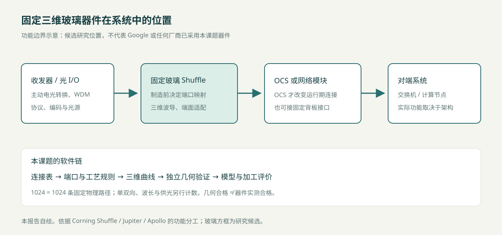
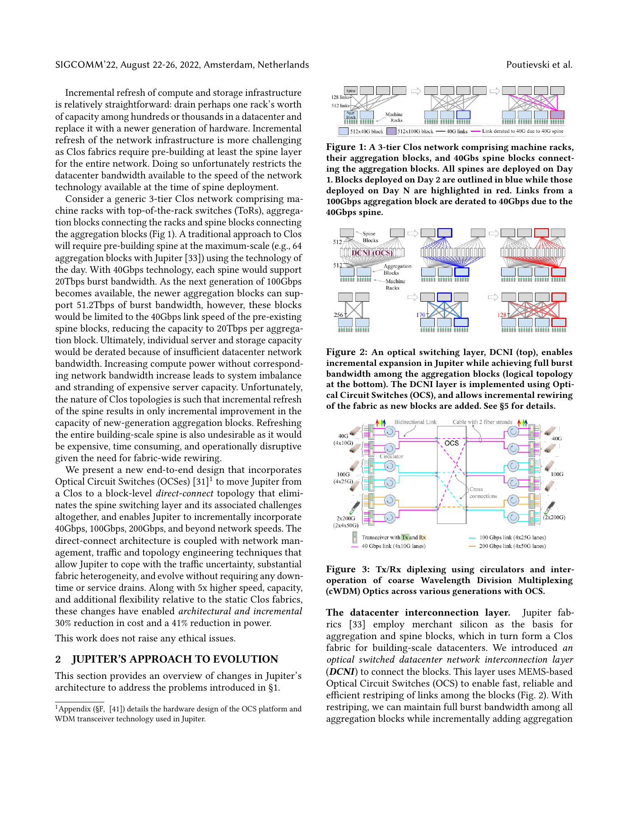

EVIDENCE · GEOMETRY · MANUFACTURING
1024通道三维玻璃光波导
应用、现状与技术基础
74项来源 · 38项论文/预印本 · 16篇全文重点章节 · 32个答辩问题
区分原始事实、理论推导、研究构造与未验证目标。全文访问限制和本课题参数缺口均保留。
源文件：阅读指南与文件目录.md
1024通道三维玻璃光波导自动布线：研究资料包
截止及访问日期：2026-10-28（Asia/Shanghai）。
建议从 研究意义 和 直接相关工作对照 开始，再读 绪论初稿。离线全文阅读入口汇总全部专题；可筛选文献目录用于找原始资料。
核心结论
- 最可信的直接应用是固定光学Shuffle、光背板和阵列接口适配。 与OCS的关系主要在外围固定映射，无源玻璃不是动态光交换机。[CorningShuffle][Jupiter2022]
- 1024有高密度物理互联背景，但不是创新本身。 US Conec/Fujikura的51.2Tb/s CPO架构示例涉及1024根Tx/Rx纤，Molex系列覆盖更高纤数；是否需要一块1024通道玻璃芯片仍取决于BOM。HBM1024位不等于1024根光波导。[USConec165][MolexShuffle][IntelOCI2024]
- 已有工作比泛泛背景描述更接近本题。 2016年已有256条真3D波导及曲率／间距约束设计，2021年已有自动三维FI/FO路由；2025年有>1024离子交换玻璃互联及3D直写数据中心fabric。不能把这些能力写为从未有人做过。[Yoo2016][Routing2021][Brusberg2025][Castro2025]
- 玻璃的优势是待比较的工程假设。 体积、集成和重复性可能获益，损耗、逐线加工、装配和维修可能付出代价；IEEE贡献者演示明确给出相对optical-flex的损耗反证。[Castro2026]
- 可检验的贡献在于受工艺约束的多拓扑三维路由、独立连续几何验证、模型标定和制造评价。 软件、模型和实物证据应分开。未获得本项目代码和实验日志，资料包不判断目标功能已实现。
交付文件
辅助文件：16篇重点阅读记录、检索方法与限制、CSV文献导出、RIS文献导出、可复算规模数据。sources/保留合法公开全文、元数据和分类笔记；figures/保存已核对的原图阅读辅助；scripts/保存生成与审查脚本。
最值得优先读的文献
仍存在的争议与限制
单块1024玻璃器件的必要性、相对光纤的全生命周期收益、实验室可用半径／层距、三维串扰和加工吞吐均未有本项目实测。高通道IOX、2021自动3D路由和2025玻璃fabric的关键全文尚未全部取得，不能据摘要推断其全部能力。内存池化的收益存在条件分歧，见Pond及Google反证。
本次采用公开网页／原文／Crossref补充检索，未运行需要密钥的OpenAlex完整检索，不声称系统综述穷尽性或统计饱和度。参考文献多于原建议40–60项，是因为任务还要求核对标准、产品及多个EDA工具；不是将74项都算作精读论文。16篇可访问论文重点阅读记录独立列出。
源文件：01_光电路交换与光纤重排调研.md
OCS 与 Fiber Shuffle：固定三维玻璃互联的应用位置
调研截止：2026-10-28。引用键对应 10_参考文献库.bib，定位及访问深度见 11_核心事实与证据台账.md。事实来自原始资料；推导为本报告计算；研究示例不是已部署产品。
1. 核心判断
本项目最直接的功能是：给定端口坐标、端面方向和一一连接表，在玻璃内部生成固定的三维波导集合。它与 Fiber Shuffle 的功能接近；在 OCS 系统中只能承担外围重排、扇出、接口适配或固定级间连接。若无可控开关单元，它不能实现动态 OCS。[CorningShuffle][Apollo2022]
1024 条波导表示 1024 条独立物理路径：一端有 1024 个端点，另一端有 1024 个端点，共 2048 个波导端面。不能同时把它称作“总共 1024 个端口”和“1024 输入×1024 输出动态交换矩阵”。单向、双向和双纤双工需另列字段。

本报告自绘，功能分工依据下列原始资料；玻璃模块位置为研究候选。
2. OCS 的工作原理与系统层次
电分组交换 EPS 接收并处理分组，依据目的地址、队列与调度规则转发；光电收发通常位于端口。OCS 则在一段时间内建立端到端光电路，数据在该连接内透明通过。控制器改变电路映射后，网络的逻辑邻接关系才随之改变；链路训练、路由收敛和业务迁移时间不能等同于光开关本体切换时间。[Apollo2022]
| 技术 |
改变连接的方法 |
适合讨论的优势 |
必须付出的代价 |
| 自由空间三维 MEMS |
两组可倾斜微镜把输入束指向输出 |
高端口数、较少级联光学单元、速率透明 |
精密光机装配、反馈控制、毫秒级重构 |
| 硅光 MZI 网络 |
相移改变干涉输出，级联实现交换网络 |
可与光子芯片集成、热光或电光驱动 |
单元级联损耗、热串扰、偏振和校准要求 |
| 硅光 MEMS |
移动结构改变耦合 |
低静态驱动功耗的可能性 |
制造封装与机械可靠性，不能套用自由空间 MEMS 指标 |
| 波长选择／可调收发 |
改变波长及波长路由 |
可获得较快选择过程 |
需要波长计划、收发器协同；不是任意纤端重接 |
| 固定光纤／玻璃 Shuffle |
制造时确定连接表 |
运行中无需开关驱动 |
不能按业务动态改变映射 |
以上为机制分类，不能据此给出跨技术统一的“最好”结论。Apollo 表1是2022年特定规模的技术快照，不代表2026年所有产品上限。[Apollo2022]
Clos／Spine–Leaf 说明交换机之间的逻辑连接；MPO 中哪根纤对应哪个 lane、机架如何走缆，属于物理实现。Direct-connect／Direct Mesh 也不意味着所有节点均有独立直连纤。实际网络可以稀疏连接，并通过其他聚合块中转。[Jupiter2022]
3. Google Jupiter 与 Apollo：两个层面分别读
3.1 Jupiter 的网络层结论
Jupiter Evolving 是 Google 生产网络演进经验。其 Fig.1 对照原有三层 Clos，Fig.2 上部画出由 OCS 构成的 DCNI 物理层，下部画出聚合块的逻辑连接；Fig.3 表示环行器与 CWDM 收发器的关系。论文报告网络演进过程中的容量／速率约5倍、资本开支下降30%、功耗下降41%，以及生产流量平均聚合块级路径长度1.4。这些是整套架构与运营共同取得的结果，不能归因于一块无源玻璃重排芯片。[Jupiter2022, 摘要、§2、Fig.1–3]

图为原论文整页阅读辅助，保留上下文；正式论文如重绘，应标注“根据 Poutievski 等，2022，Fig.1–3 改绘”，并在引用前核对学校的图片使用规范。
3.2 Apollo 的器件层结论
Apollo 描述 Palomar 的自由空间三维 MEMS 实现：136×136 非阻塞映射、毫秒量级切换，文中代表性插入损耗通常低于2 dB，整机最大功耗108 W。136²=18496 是可选输入输出组合数；同一置换下最多136条独立配对，不是18496条同时存在的波导。[Apollo2022, §2–4、Fig.7]
环行器使 Tx/Rx 共享部分纤路并改变端口计数方法。因此不能根据“收发 lane 数×2”机械估算 Apollo 的物理纤数。MEMS 的“三维”是光束在自由空间内传播；本项目“三维”是波导中心线位于玻璃体内，两者不属于同一制造技术。
网络何时改变拓扑由控制系统决定；固定 Shuffle 可以把一组连接器的纤序映射到另一组连接器，但不代替 MEMS 的配置、反馈或网络流量工程。
4. Fiber Shuffle 的定义和拓扑
将固定器件定义为置换：输入集合 I、输出集合 O，双射 π:I→O；每个输入恰有一个输出，不复制、不合并。扇出可以仅表示空间阵列展开；若需要光功率一分多路，必须另设分束器，不能靠普通波导交叉实现。
典型结构包括：连接器内部纤序重排、Tx/Rx 归并、行列转置、端口分组间的全连接配线、背板盲插接口转换、单芯纤阵列至多芯纤阵列转换。厂商“2×2／4×4 Shuffle”往往指连接器或分组间的重排规格，必须索取逐纤接线表；不能默认指2根或4根纤，也不能把宣传中的“带宽增加”解释为无源器件创造了带宽。[CorningShuffle]
研究用4×4转置示例：输入按 (i,j) 排列，i,j=0…3，输出为 (j,i)；共有16条路径。输出编号 π(4i+j)=4j+i。它是16通道静态重排，不是4×4动态交换机。
MT 是多纤精密插芯；MPO 是连接器接口家族，MTP 是 US Conec 的相关商品名。标准常见250 µm纤芯中心间距不等于激光直写芯片的内部最小安全间距；后者取决于模场、耦合长度及工艺扰动。US Conec 的165 µm间距研究用80 µm包层纤，说明端面密度也在变化，不能把250 µm当作所有未来接口的固定常数。[USConec165]
5. 商业方案及反面证据
| 原始资料 |
可核实能力 |
对本项目的意义 |
不能从资料推出的内容 |
| Corning Shuffle Solutions |
面向AI/HPC和Spine–Leaf的被动Shuffle Box及Assembly，定制映射 |
证明真实需求是线序管理、安装和集成 |
该页未给统一插损、1024通道型号或价格 |
| Molex OptoConnect 数据表 |
自动 FlexPlane 制造，72至6400根纤、1至6 RU系列 |
已有超过1024物理纤规模；反驳“行业全部手工” |
不能把系列最大6400纤归到任意1 RU型号 |
| US Conec EZ Shuffle |
单模块最多256纤，可堆叠，41×84×9.5 mm |
是固定重排的直接体积与模块化基线 |
四模块合计1024纤不等于单模块任意1024置换 |
| IEEE 802.3 E4AI 2026 演示 |
比较线束、cassette、Shuffle Box和玻璃嵌入式3D重排 |
提供系统—器件映射和反面技术比较 |
演示不是全部所画规模的已部署证明 |
[CorningShuffle][MolexShuffle][USConecEZ][Castro2026]
Castro 2026 第13页明确提出三维直写玻璃的损耗高于 optical-flex Shuffle。其前页也承认物理布纤可由机器人自动完成。因此合理问题应是：在特定尺寸、端面和工艺约束下，玻璃是否能以可接受损耗换取集成密度和一致性，而不是“取代落后的手工光纤”。[Castro2026]
6. 应用实例A：OCS外围固定映射
真实背景： Jupiter DCNI需要大量固定端口接入可重构OCS。[Jupiter2022] 以下尺寸和1024数量为本报告构造的模块级研究示例，不是Google公开BOM。
系统：聚合交换机光模块→光纤连接器阵列→固定玻璃Shuffle→OCS接口阵列→动态OCS→对端。
令32个输入分组各含32条单向光路，I(a,b) 接至 O(b,a)，总计1024条。玻璃负责组内序列与OCS接口次序转换，OCS仍在其后选择网络邻接；可用多块OCS或接口架分组承接，本例不假定一台136端口Palomar能接1024条独立输入。
主要约束为端面阵列布局、光预算、回波、偏振、维护边界、连接器和不同模块之间的容差。若采用环行器双向设计，应重写方向模型并评估反射；不能直接沿用单向1024线图。
是否必须1024？否。实际需求取决于系统BOM。1024作为批量模块的研究规模合理，但没有证据表明Google必须使用一块1024通道玻璃芯片。与光纤方案比较时，应对同一连接表和同一外部接口测量总体积、最坏插损及更换成本。
7. 应用实例B：AI集群Spine–Leaf固定转置
真实背景： Corning、Molex和IEEE演示均确认lane重排用于高密度交换网络。[CorningShuffle][MolexShuffle][Castro2026] 下列32×32为研究构造。
令32个Leaf侧接口组和32个Spine侧接口组，每个Leaf组向每个Spine组提供一条单向纤路，合计 32×32=1024 条。输入端按Leaf分组，输出端按Spine分组，连接规则仍为 I(l,s)→O(s,l)。若Tx/Rx各走一根纤且需要完整双向配对，则需2048条物理路径，或把当前1024条解释为512对双工纤路。节点数、ASIC端口数、光纤数和波导数应分栏展示。
玻璃中可用升降、空间换序与端面扇出来避免近距离相遇。它改善的可能是固定连接模块，不负责分组交换、拥塞控制或运行期路由。低损耗、维修方便和量产成熟的光纤Shuffle必须作为基线；若只需稀疏连线或拓扑频繁升级，分块光纤组件可能更合适。
8. 真正的比较应如何做
对同一π和端口阵列，先设计光纤组件、二维玻璃、三维玻璃三套候选。固定外部接口与测量参考面，记录：芯片与完整组件体积；每通道插损分布及最坏值；串扰矩阵；连接良率；热循环漂移；装配工时；加工扫描长度；现场换件粒度及寿命成本。波导裸芯片比机架Shuffle Box小，并不能单独证明系统体积更小。
最终机会在于结构化固定连接、高密度阵列适配和可重复制造的数据链；限制在于低折射率差导致的弯曲空间、逐线扫描吞吐、端面装配、固定拓扑及整片失效更换。实际价值必须在相同边界条件下证明。
本文引用来源
完整作者、卷期、DOI及访问边界见10与11文件；下面给原始来源快捷链接。
源文件：02_HBM与GPU及CPU互联调研.md
HBM、GPU、CPU与光互联：层级、通道口径及适用性
截止：2026-10-28。原始资料、页节定位见 sources/计算系统互联证据分类.md 和证据台账。数据以十进制GB/s、TB/s计；1 byte=8 bit。厂商公布值、模型值、计算示例分别标示。
1. 应用判断先行
GPU—HBM不是本课题现阶段最可信的直接替换对象。裸HBM接口为封装内电接口；无源玻璃不完成HBM命令、时钟、电平、电光转换或缓存一致性。更合理的位置是光I/O模块周边的固定扇出、机箱光背板、交换机与前面板之间的Shuffle，以及GPU集群网络的被动端口映射。即便如此，也须证明实际端口表和光预算，不等于GPU集群必须使用玻璃。
光HBM相关研究确实存在；“不存在光HBM研究”同样不准确。[OptHBM2025] 应将其视为未来系统方案，不能当作本系统已具备的能力。
2. HBM结构及产品点
HBM把多片DRAM垂直堆叠，通过TSV与微凸点形成密集电连接，再由底层及封装互联连接GPU／加速器的内存控制器与PHY。常见2.5D实现把处理器和HBM置于中介层或高密度重布线平台上。其优势是用很宽、相对低速的并行接口获取高带宽；宽总线同时要求大量互联资源、封装面积、供电和热管理。
| 代际与核实来源 |
数据接口／速率 |
单栈带宽、容量 |
数值条件与限制 |
| Samsung Flashbolt HBM2E，2020 |
1024位，3.2 Gb/s/pin |
409.6≈410 GB/s；16 GB |
特定产品点，不是所有HBM2E上限 [SamsungHBM2E] |
| SK hynix HBM3，2022 |
1024位，6.4 Gb/s/pin |
819.2≈819 GB/s；16/24 GB |
官方量产产品介绍 [SKHBM3] |
| Micron HBM3E，访问2026-10-28 |
1024有效数据I/O；>9.2 Gb/s |
厂商报>1.2 TB/s；24/36 GB |
“>9.2”和“>1.2”不是等式；具体速率看SKU [MicronHBM3E] |
| HBM4 JESD270-4初版，2025-04 |
2048位；初版发布口径最高8 Gb/s |
算术为2.048 TB/s |
标准全文受限，未精读；不能称初版为2026最新修订 [JEDECHBM4] |
| Micron HBM4，2026-03-16 |
厂商报>11 Gb/s/pin |
>2.8 TB/s；36 GB 12H |
厂商声称2026Q1已volume shipment；48 GB16H为送样 [MicronHBM4] |
后续SPHBM4/JESD330-4已出现JEDEC官方发布索引，但本次未取得标准正文，详细速率、引脚和距离不纳入已核定参数表。HBM4A修订亦需正式文本核对。[JEDECSPHBM4]
本次未取得足以统一比较上述产品整栈功耗的数据。功耗依赖速率、读写占比、活跃率、温度、电压及控制器边界。不能给一个“HBM能耗”常数，也不能把内部工具计算的厂商相对改善当作独立实验。
HBM的距离限制主要来自电PHY、通道预算、时序和封装实现。未取得指定PHY规范时，不应编造“只能几毫米”统一硬上限。扩大栈数还受到中介层面积、良率、供电、PHY边缘空间和散热约束；这些约束不会仅因加入无源波导而消失。
3. 1024位为何不等于1024根光波导
数据位宽描述并行电接口；光链路通过串行化、编码和WDM重新组织数据。设单向净数据率D，每波长线路速率r，每纤W波长，有效载荷效率η，则理论信号纤下界为：
Nsignal ≥ ceil[D/(r·W·η)]。
这不是完整BOM：收发分纤、冗余、时钟、外部激光供光、分区与连接器均可能增加数量。接口时序和协议兼容也不由带宽等式保证。
人为计算示例： 若D=1.2 TB/s=9.6 Tb/s，r=100 Gb/s，W=8，η=0.8，则至少15根单向信号纤；W=1时为120根。这些是假设，不是可量产HBM光接口，目的是证明物理纤数并不由1024位唯一确定。
Intel的真实演示提供了更直接的口径例子：64个32 Gb/s通道/方向，经8条纤、每纤8波长承载；双向8对纤。每方向2.048 Tb/s，双向合计4.096 Tb/s，厂商简称4 Tb/s。[IntelOCI2024] “64通道”在此不能替换成“64根独立波导”。
4. 各互联层级必须分开
| 场景 |
常见机制 |
本次可核实指标例子 |
对玻璃Shuffle的关系 |
| GPU—HBM封装内 |
专用HBM电接口 |
单栈带宽见上表 |
不是透明替换对象 |
| CPU—GPU板／系统内 |
PCIe、平台专用链路 |
PCIe5 x16：编码后单向约63.0 GB/s，实际负载更低 |
光化还需PHY／retimer／协议实现 |
| GPU—GPU scale-up |
NVLink及NVSwitch |
H100 18 links，总900 GB/s双向 |
当前不能假设全部光化 |
| GPU集群scale-out |
Ethernet／InfiniBand及收发器 |
需按具体速率、lane与光模块核算 |
固定lane重排的直接候选 |
| CPU—内存扩容／池化 |
CXL.mem及交换系统 |
CXL4.0于2025-11发布，128 GT/s |
协议可由光底层支持，但不是无源玻璃自带能力 |
| 光I/O chiplet |
EIC/PIC、WDM、外部或集成光源 |
Intel OCI见上节，最长100 m演示定位 |
可承担芯片至外部阵列间的固定光路 |
[PCIE5][HopperGuide][CXL4][IntelOCI2024]
PCIe 32 GT/s是每lane传输率，不是GB/s。x16按128b/130b计算：32×16×128/130/8≈63.015 GB/s单向。双向相加约126.03 GB/s还未扣分组开销。NVLink900 GB/s为双向汇总，HBM的TB/s又是内存接口口径，不能把三个数字放在一张不标方向的“速度排名”图里。
截至访问日NVIDIA官网给Hopper/Blackwell/Rubin每GPU双向NVLink分别900/1800/3000 GB/s，且表有初步规格提示；Rubin产品页内存带宽19.2 TB/s，区别于2026年1月CES稿的22 TB/s与3.6 TB/s NVLink。[NVLinkCurrent][RubinCurrent] 建议答辩优先用稳定历史SKU作为例子，使用滚动页面时附访问日期和截图。
无源波导本身没有逐比特开关驱动，不意味着整个光链路能耗为零。Intel所报5 pJ/bit属于其co-packaged方案口径；如果不知道激光、温控、FEC及有效负载边界，不宜据此断言优于任意铜链路。[IntelOCI2024]
5. CPO、光中介层、光背板分别是什么
CPO把光引擎移近交换／计算ASIC，以缩短高速电走线；光中介层可以承担封装内光学连接；光背板连接板卡或模块。三者既可能使用玻璃、聚合物、光纤或混合结构，也可能同时包含电路与光路。工艺材料并不决定协议和网络功能。
对于本课题，最可检验的问题是：给定光引擎和前面板的阵列坐标与纤序，能否产生低违规、光预算可接受的固定三维重排；不是设计完整CPU—GPU一致性互联。
6. 内存池化与存算分离：支持与反证
内存扩容是给一台主机增加可寻址容量；池化是把容量资源按需分配给主机；共享允许多个主机访问同一资源。是否缓存一致、是否跨交换机、是否允许细粒度动态共享取决于标准代际与系统实现。[CXLIntro2023]
Pond采用8—16 socket小池、工作负载识别和本地／池内存分层放置，在其158种工作负载评估条件下给出DRAM成本约降7%、相对同NUMA节点性能差1—5%。文中额外70—90 ns等硬件模型条件必须一起引用。[Pond2023, §4.1、Fig.7–8、§6]
Google的 A Case Against CXL Memory Pooling 则强调：DIMM容量离散、CXL交换／配线额外成本、软件复杂度和既有调度优化，可能使DRAM节约无法转化为总成本收益。[AgainstCXL2023, §3–5] 两文工作负载、价格和实现假设不同；反证不等于所有CXL无用，支持结果也不证明光解耦普遍经济。
Spark SQL案例发现特定分析任务的带宽需求可能由当时网络满足，但不能推广到随机依赖访问或GPU—HBM。[Rao2016] 早期光内存经济模型也提醒需比较容量利用率收益和网络费用，2015价格不能作为2026报价。[Abali2015]
7. 光传播到底占多少时延
分解：Tremote = Tcontroller + Tserialization + TE/O + Tflight + Tswitch/queue + TO/E + Tprotocol + TDRAM。往返访问还需在对应方向计入返回和请求；不要把只有数据路径的测量写成完整load-to-use延迟。
假设群折射率ng=1.5，则Tflight≈ngL/c≈5 ns/m单程，1/10/100 m分别约5/50/500 ns，往返传播约10/100/1000 ns。此为理论估算，ng不是本项目测量值。厘米玻璃内几何优化对总体远端访问延迟通常只影响很小一项，不能消除协议和DRAM时延。
指针追逐、依赖load、缓存未命中串行链更敏感；可预取、批处理、大块DMA、带宽受限且并发高的任务可能更适合远端访问。光可缓解长距离高速电链路损耗和带宽密度，但距离本身仍增加飞行时间。
8. 两篇直接光内存研究的准确使用
Ou等2025多栈光HBM： 保留传统HBM结构，以EIC/PIC和CPO构成多栈模块。论文设计6组EIC/PIC、每组48根纤，共288根（含供光、TX、RX），并以LLMCompass做性能建模；没有制造光HBM封装，也不是1024根玻璃路径实验。[OptHBM2025, §II–III、Fig.2–6] 它证明相关架构有人研究，同时说明本课题若要直接服务该场景，必须拿到具体端口与封装约束。
OCM2022： 传统DDR DRAM、SerDes和WDM构成光连接内存；4个DDR4通道用2根纤承载。系统性能和1.02 pJ/bit能耗为模型结果，对照是论文设定的远端网络方案，不能读成相对本地HBM的实测提升。[OCM2022, §3、Fig.3、§4.2–4.3]
9. 最终适用性矩阵
| 候选应用 |
当前判断 |
决定性缺口 |
| 直接取代GPU—HBM PHY |
不适合作为当前直接应用 |
缺主动器件、协议和时序、功耗、散热及封装验证 |
| 光HBM模块内固定扇出 |
未来候选 |
缺真实BOM、端口、目标波长和光预算 |
| GPU集群网络Shuffle |
最可信应用方向之一 |
需明确方向、lane/纤/WDM口径、服务与换件边界 |
| 机箱光背板／CPO前板重排 |
适合固定拓扑研究 |
需与成熟光纤／optical-flex同条件对照 |
| 跨机架长距离主体传输 |
光纤更合理 |
玻璃芯片只适合局部互联，不能替代长距离柔性走缆 |
| 按负载实时重构内存池 |
无源玻璃单独不能完成 |
需CXL／光开关及控制系统 |
最可信的千级物理通道依据来自高密度CPO/Shuffle资料，而不是HBM位宽。课题价值应聚焦固定互联设计工具，保留面向未来光计算封装的接口扩展可能。
本文引用来源
完整作者、卷期、DOI及访问边界见10与11文件；下面给原始来源快捷链接。
源文件：03_产业技术与光子设计工具调研.md
产业、制造技术与光子EDA基础
截止2026-10-28。引用键和访问限制见文献库、台账及 sources/光子设计工具证据分类.md。表内“待标定”表示本课题工艺未提供，不能以软件默认值代替。
1. 技术路线必须分开比较
| 技术 |
制造／连接方式 |
空间能力 |
弯曲与损耗应怎样评价 |
耦合、制造和规模边界 |
| 铜互联 |
PCB、封装重布线、缆线 |
可多电层，通过过孔 |
以频率相关插损、反射、串扰与均衡评价，不用光dB/cm直接排名 |
近距成熟；高速远距可能增加重定时、能耗和复杂度 |
| 独立光纤／Shuffle |
成熟拉丝光纤，固定、贴合、熔接及连接器装配 |
真实空间走纤、可柔性布置 |
光纤材料损耗常按dB/km；组件需计连接器／弯曲／熔接 |
超千纤已有商业系列；模块化、维修与标准接口优势明显 |
| 硅光 |
晶圆光刻刻蚀，PDK波导、交叉器与主动器件 |
典型单层平面，也有多层／异质集成 |
高折射率差可用紧凑弯曲，但依赖截面、波长、模式 |
模场匹配、耦合、偏振、工艺成本与面积约束；不能称只能二维 |
| 聚合物波导 |
光刻、压印、激光写入或双光子聚合 |
可平面、多层、自由成形 |
材料吸收、粗糙度、弯曲和温湿漂移依材料而异 |
大面积／柔性与板级集成可行；自由成形光线键合是直接竞争路线 |
| 离子交换玻璃 |
掩膜开口、热或场辅助离子交换，形成渐变折射率 |
通常近表面／埋入层，层间需具体工艺 |
低损耗与批量图形制造有优势；交叉／弯曲需独立设计 |
不等同任意xyz连续写入；高通道IOX是重要直接竞争 |
| 飞秒直写玻璃 |
聚焦脉冲在体内引起非线性吸收及永久折射率改性 |
真正连续xyz曲线 |
模场、改性类型、残余应力、曲率和深度共同决定损耗 |
无掩膜、灵活；逐线多扫描影响吞吐，深度像差与端面装配不可忽略 |
[CorningFiber][MolexShuffle][Li2023Review][Brusberg2025][Gattass2008][PhotonicWire2012]
条件完整的数值锚点
| 来源 |
原始数值 |
条件 |
能用于什么／不能用于什么 |
| Fully-assembled FI/FO |
传播约0.2 dB/cm；每端面约0.1 dB；组装后平均插损0.63 dB |
1550 nm，硼铝硅酸盐玻璃，多扫描；4芯、19 µm芯距；芯片10×6.5 mm，封装27×6.5 mm |
用作低损耗FLDW与装配误差实例；不能外推1024通道 [Fanout2026] |
| 2025 IOX玻璃论文 |
传播0.034 dB/cm；摘要报告超过1024互联 |
专门优化的离子交换玻璃；本次未得全文核对该数值波长与全部测试几何 |
仅作该论文摘要级结果，不纳入跨材料定量排名 [Brusberg2025] |
| Corning具体OS2跳线页 |
1550 nm光纤最大衰减0.25 dB/km；运行最小弯曲半径10 mm、安装20 mm |
指定2 mm外径跳线和SMF-28 Ultra产品，纤参数与缆线机械条件分开 |
不把缆线半径当玻璃导模半径；不把/km与/cm直接比较 [CorningPatch] |
| US Conec EZ Shuffle |
256纤；41×84×9.5 mm |
指定可堆叠管理模块，非玻璃裸片 |
用作组件级基线，不能证明它支持任意单片1024映射 [USConecEZ] |
关键约束如本课题最小弯曲半径、最小间距、层距、交叉损耗、PDL、写深、扫描速度和工作波长均待标定。没有一个可跨材料、波长和设备直接使用的“玻璃波导安全间距”。
2. 飞秒激光直写：对路由真正有影响的物理
超短脉冲在焦区产生高峰值强度，透明材料内部通过多光子／隧穿电离等非线性过程吸收能量，引起结构、密度或应力变化。合适条件形成可导模的折射率分布；改变能量、重复频率、聚焦和扫描也可能形成缺陷、双折射结构或损伤，不能把所有激光改性都视为低损耗波导。[Gattass2008][Li2023Review]
单次扫描快，但截面受焦斑和扫描方向影响；多轨迹／重复扫描可改善截面和模场，同时增加加工时长。写入深度增加时球差与焦区能量分布可能变化；三维路由器必须能为不同深度配置不同可用区域和参数，而非仅添加z坐标。
S型升降应满足端面切向、曲率和间距。固定水平投影半径不能保证空间曲线半径；只有验证三维中心线才可判断。近距离平行段的耦合取决于间距、长度、模场、失谐、偏振和波长；交叉角很大的短相遇段与长距离平行靠近不能使用同一常数。
加工顺序也可能影响已写波导、应力、光束遮挡或运动效率，需依据设备及材料验证；不能把电子布线的“跨层过孔”抽象无条件移植为零损耗瞬时升降。
工艺参数的证据分工
| 可由文献提供 |
必须以实验室设备／试片确定 |
| 可行改性机制、曲线设计形式、测量方法、代表性参数区间 |
玻璃牌号与批次、写入波长／脉宽／能量／重复频率 |
| 模场匹配和损耗模型结构 |
数值孔径、有效写深、像差补偿与方向依赖 |
| cut-back、弯曲对照、串扰矩阵与装配评估方法 |
α、弯曲损耗曲线、最小距离／层距及交叉耦合 |
| 扫描总长与时间估算公式 |
有效扫描速度、重复次数、运动加速度、驻留与开关光延时 |
3. 加工时间必须纳入千通道评价
设每通道中心线长Li、重复扫描次数mi、有效写入速度vi，则纯写入下界：
Twrite ≥ Σ(mi Li / vi)。
总时间还需空程、回退、加减速、深度变换、对焦、开关光、装夹及质检。多焦点并行写入会改变模型，只有设备支持时才能计入。
人为估算： 1024条、每条50 mm，总中心线51.2 m；若单扫描10 mm/s为85.3 min，重复8次为11.38 h。若1 mm/s，则分别14.22 h和113.78 h。速度和扫描次数只是敏感性参数，不是课题组设备数据。局部最短路径不一定是最快加工路径，写入顺序及空程也需记录。
良率也有规模效应。若假设每条独立成功率p，则全片成功概率p^1024。p=0.999时约0.359；p=0.9999时约0.903。该独立模型忽略共同装配／漂移失效，不能用作真实良率预测，但足以提示需要坏道替代、分块和最坏通道统计。
4. 企业和产品所提供的技术基础
Corning同时覆盖光纤Shuffle与IOX玻璃研究，两条路线不是非此即彼。Molex FlexPlane证明光纤可自动制造，US Conec提供标准端接与高密度插芯；对玻璃方案必须比较端面装配后的完整器件。[CorningShuffle][Brusberg2025][MolexFlex][USConec165]
Intel OCI说明芯片周边光I/O正在探索高带宽、低能耗和更长距离；它由主动EIC/PIC/WDM构成，玻璃若参与，只是其固定互联段的候选。[IntelOCI2024]
5. 光子EDA能做什么
| 工具／方法 |
原始资料核实能力 |
本课题可用之处 |
本次未证明的能力 |
| Ansys Lumerical MODE/FDE/FEEM |
模场、有效折射率、弯曲／螺旋导模及损耗 |
标定截面和曲率的紧凑模型库 |
并非只支持二维；但未证实自动求解1024全体积曲线路由 |
| FDTD类求解 |
三维Maxwell数值分析，器件场传播 |
小规模弯曲、交叉、近距耦合试片 |
全芯片千路长玻璃直接全波计算的经济性需评估 |
| INTERCONNECT／OptSim |
光子电路和系统传播，使用紧凑模型 |
用路由生成的长度与器件模型评估链路 |
电路仿真不自动得到制造几何 |
| OpticStudio |
顺序／非顺序三维光线追踪及相关光学分析 |
端面耦合、封装和自由空间接口 |
不应把非序列光线追踪当近场导模串扰模型 |
| Synopsys OptoCompiler |
交互辅助波导路由、避障、端口对齐 |
借鉴版图与电光协同流程 |
公开页的交互功能不等于通用自动xyz求解器 |
| KLayout |
脚本化版图、多边形DRC、2.5D显示 |
平面投影、接口版图与检查 |
官方2.5D为挤出显示，不等于连续空间曲线验证 |
| gdsfactory |
bundle、all-angle／Dubins路径、半径／间距、碰撞选项 |
端口数据结构、平面基线与曲线构造 |
默认参数非材料极限，端口重排需避免改变固定连接表 |
| IPKISS |
参数化连接、弯曲半径、间距、长度匹配 |
商用流程和设计规则参考 |
该接口文档未证明自由xyz全局避碰 |
| femto |
FLDW三维曲线、速度／深度／扫描配置和PGM导出 |
专用直写工具的重要对照，可借鉴加工接口 |
仅阅读源码，未运行验证任意连接表全局自动布线 |
[LumericalFDE][LumericalBent][LumericalCompact][OpticStudio][OptoCompiler][OptSim][KLayout][KLayout25D][Gdsfactory][IPKISS][Femto]
“现有EDA无法处理三维”不成立。应区分：三维场仿真、三维CAD显示、给定曲线导出、自动生成多路径、连续几何DRC、全局优化和加工验证。本项目若有价值，可能在这些能力面向特定直写工艺的组合与量化验证，而不是泛称现有软件空白。
6. 自动布线研究已覆盖哪些问题
Charles等2012已进行路径长度匹配的真正3D直写；2016异构2D/3D系统给出256输入三维互联及曲率、间距约束；2021低损耗fan-in/fan-out明确使用自动3D路由。平面PIC领域APR／LiDAR2.0已有曲线感知A*、交叉、损耗、拥塞和设计规则，国内Deng等也研究二维损耗优化。[Charles2012][Yoo2016][Routing2021][APR2024][LiDAR2025][Deng2025]
这些工作不能因为平台不同而忽略；也不能因为它们做过部分功能便认定本课题没有价值。公平比较应落到：支持何种端口和拓扑、规模、体积约束、连续验证精度、工艺模型及可复现数据。
7. 并购时间线的核实与产品归属
- Ansys于2021-10-01完成Zemax收购；2021-08-30是签署协议公告，不能混为完成日期。完成事实由Ansys年报Acquisitions段核实。[AnsysZemax2021]
- Synopsys于2025-07-17完成Ansys收购。[SynopsysAnsys2025]
- Keysight于2025-10-17完成Synopsys Optical Solutions Group及Ansys PowerArtist交易，其中包括RSoft。因此2026年不能把所有历史Synopsys光学软件都写成当前Synopsys产品。[KeysightOSG2025]
并购说明工具链生态变化，并不证明厂商已经或尚未实现本课题的特定路由功能。功能判断仍须以对应版本文档和实际试用为准。
8. 可落实的工程工具链
连接表校验→端口坐标和切向→候选路径／层分配→曲线平滑→连续曲率与最近距离检查→局部重布→紧凑损耗评估→加工轨迹离散→速度和加速度检查→独立验证器→报告及数据导出。
应保留固定net ID，避免排序或分组改变用户要求的映射；输出CSV连接表、JSON曲线及参数、加工控制器适配文件和验证报告。GDS只适合部分平面表达，不应丢弃z、切向与连续曲线信息。只有输出加工文件而未经过设备规则检查，不能称“可直接加工”。
本文引用来源
完整作者、卷期、DOI及访问边界见10与11文件；下面给原始来源快捷链接。
源文件：04_相关研究对照与创新空间分析.md
直接相关工作对照与研究空白审查
截止：2026-10-28。下表保留每篇材料、工艺、规模、空间维度、算法、约束、损耗和实测的区别。未披露／NR不等于没有。本表包含20项工艺/器件/算法工作，另补Charles及EDA约束路由。完整元数据见文献库。
本文件分类笔记中A=全文或作者稿相关章节已读；B=原始摘要/片段；C=机构元数据。总台账统一为A=全文、B=官方文档、C=原始摘要、C+=摘要加片段；以11台账为最终访问口径。相关性评分仅表示与本课题接近程度。
分类表
| 编号 |
准确题名、年份、DOI/URL |
机构与工艺 |
通道/三维口径 |
自动路由、约束和损耗 |
实物、证据层级、局限及与本项目关系 |
| G01 |
Optical Design and Applications for Ion-Exchanged Glass Waveguide Circuits；Brusberg等，2025；10.1109/TCPMT.2025.3526500 |
Corning；优化碱玻璃、银离子交换 |
摘要报告CPO电路over1024 waveguide interconnects；不能据此称任意真3D |
研究交叉、间距、弯曲、偏振等；自动布线未从摘要确认；传播0.034 dB/cm的波长条件未从摘要核实 |
B，R10；IEEE 15(8):1614–1624，在线2025-01-06。重要竞争先例；需全文区分设计/实测通道覆盖、平面/多层、损耗波长；不能把0.034直接作为本项目工艺系数 |
| G02 |
Fully-assembled low-loss fan-in/fan-out device by laser direct writing for coupled-core fiber；Fengrui Yu等；卷期2026、DOI含2025；10.1016/j.optlastec.2025.114521 |
上海交通大学等；硼铝硅酸盐玻璃、多次扫描飞秒直写 |
4芯、19 μm芯距CC-4CF的真3D FI/FO |
0.2 dB/cm直线传播、0.1 dB/端面；1550 nm；组装后平均0.63 dB；非1024路由算法论文 |
B，R10；ScienceDirect摘要+Introduction+Experimental片段可读；芯片10×6.5 mm、组装27×6.5 mm。原始实验说明组装损耗重要；不可以将4路平均外推1024路良率 |
| G03 |
Optical Waveguides Fabricated via Femtosecond Direct Laser Writing: Processes, Materials, and Devices；Jiawei Li、Chun Cao、Yiwei Qiu、Cuifang Kuang、Xu Liu；2023；10.1002/admt.202300620 |
之江实验室、浙江大学；综述 |
综述多种材料和器件，非单一通道系统 |
用于定义改性、材料、工艺与器件类别；不能以综述摘要填入具体实验数值 |
B，R8；Wiley页面访问full会跳abs，仅摘要+参考文献，未将其伪装成全文精读 |
| G04 |
Concept Demonstration of 3D Waveguides Shuffle Converter for Multi-Core Fiber/Single-Mode Fiber Fan-in Fan-out Configuration Toward Over 1,000 Port Count；Haisong Jiang、Yasuhiro Hinokuma、Sampad Ghosh、Ryota Kuwahata、Kiichi Hamamoto；2021；10.1587/transele.2020ECS6002 |
九州大学；材料、加工法待全文 |
“toward over1000”是目标系统端口口径；不能当作加工了1000波导 |
摘要原理器件IL2.1 dB、XT<-54.2 dB；测量波长与器件规模待全文 |
B，R10；E104-C(1):34–36，2020在线、2021卷期。J-STAGE/IEICE PDF受限；自动布线/曲率约束未知 |
| G05 |
Heterogeneous 2D/3D photonic integrated microsystems；S. J. Ben Yoo、Binbin Guan、Ryan P. Scott；2016；10.1038/micronano.2016.30 |
UC Davis；ULI，Corning Eagle 2000相关器件 |
1×256线阵变为16×16二维阵列，256独立波导；真3D |
等光程、最小曲率半径、最小波导间距；示例Δn约0.5%、选Rmin20 mm，报告弯曲损耗可忽略，条件不能普适化 |
A，R10；PDF pp.4–5正文、Fig.6多环、Fig.7 256波导；全文综述含该组实物。是最强直接先例；尚不等于任意1024置换、多拓扑全局优化、开源可复现工具链 |
| G06 |
Low-Loss Three-Dimensional Fan-in/Fan-out Devices for Multi-Core Fiber Integration；Yi-Chun Ling、Shuyun Yuan、S. J. Ben Yoo；2021；10.1364/OFC.2021.Th1A.37 |
UC Davis；ULI |
真3D FI/FO；可访问摘要未给通道数 |
摘要明确automatic 3D waveguide routing algorithm；两种玻璃传播0.3与0.16 dB/cm；摘要未列波长 |
B，R10；Optica原始摘要；证明已有3D自动路由，但具体算法、拓扑泛化、串扰、速度和制造参数需全文 |
| G07 |
Photonic Chip with Embedded Data Center Fabric；Jose Castro、Bulent Kose、Robert Reid、Paul Huang、Brett Lane、Simon Gross、Michael Withford；2025；10.1364/OFC.2025.W2A.36 |
Panduit、Modular Photonics；3D直接激光写入PIC |
folded CLOS；通道数未从摘要核实 |
测loss、XT、spectral response及400 Gb/s traffic；自动路由未核实 |
B，R10；Optica摘要；最直接的玻璃网络Shuffle应用先例，必须列入竞争比较；不能声称本课题首次实现玻璃内嵌数据中心连接 |
| G08 |
Femtosecond laser additive and subtractive micro-processing: enabling a high-channel-density silica interposer for multicore fibre to silicon-photonic packaging；Gligor Djogo等；2019；10.1088/2631-7990/ab4d51 |
多伦多大学、华为东莞；熔石英、激光写入+化学刻蚀自对准插孔 |
84-channel silica interposer；真3D fanout |
摘要说明低损耗/模场匹配/串扰/体积折中；未核实通用自动路由算法 |
B，R9；SciOpen原始OA摘要，IJEM1(4)045002；包装和自对准对1024规模同样关键，不能只优化中心线 |
| G09 |
Ultrafast laser inscription of a 121-waveguide fan-out for astrophotonics；R. R. Thomson、R. J. Harris、T. A. Birks、G. Brown、J. Allington-Smith、J. Bland-Hawthorn；2012；10.1364/OL.37.002331 |
Heriot-Watt、Durham、Bath、Sydney；ULI |
121波导重排120芯光纤输出，真3D |
摘要实测总吞吐损耗约7 dB，理想耦合估算约1.7 dB，必须区分实测与假设 |
B，R8；Optica原始摘要及作者arXiv1203.4584；不是千路Shuffle，但证明2D阵列到线阵重排的具体用途和耦合惩罚 |
| G10 |
Low-Loss Multimode Glass Waveguides With Beam-Expanded Fiber Connectors Enabling On-Board Optical Links；Lars Brusberg、Aramais R. Zakharian、Marcel Neitz、Shenping Li、Brooke A. Hathaway、Sergey A. Kuchinsky、Pierre Beneke、Henning Schröder；2020；原始页 |
玻璃离子交换、渐变折射率多模；Corning/Fraunhofer相关，机构以全文为准 |
12×12 optical shuffle layout，未据名称推导144条；9×12英寸玻璃板；非任意体3D |
1310 nm传播0.035 dB/cm，接口约1 dB；2 m螺旋波导 |
B，R9；JLT38:1350–1357；大面积和低传播损耗是2D玻璃的强竞争能力；不能说高密度必需3D |
| G11 |
Glass Platform for Co-Packaged Optics；Brusberg等；2023；10.1109/JSTQE.2023.3247245 |
Corning等；IOX+TGV+RDL+刻蚀腔，玻璃封装 |
玻璃电/光封装；不能将电封装3D等同自由曲线波导3D |
摘要传播<0.1 dB/cm、SiN到玻璃最小0.5 dB、平均连接器0.83 dB；波长等条件待全文 |
B/C，R8；Crossref作者机构核验，原文IEEE受反爬；2023 Grenier全文引用并说明相关IOX路线。不能将其作为已读全文 |
| G12 |
Ultrafast laser processing of glass waveguide substrates for multi-fiber connectivity in co-packaged optics；Jason R. Grenier、Lars Brusberg、Kristopher A. Wieland、Juergen Matthies、Chad C. Terwilliger；2023；10.3389/aot.2023.1244009 |
Corning；银离子交换波导+超快激光切割、对准槽 |
MPO/MT接口，非1024通道及非激光写光芯论文 |
Sec.2明确光波导是光刻/主次离子交换；重复插拔被动对准相对主动对准平均增加0.19 dB |
A，R9；全文11页；加工端面<1 μm平坦度覆盖6.5 mm接头区；这些是给定工艺实验，不能作为本组精度承诺；说明激光加工≠激光写波导 |
| G13 |
Optical Routing for 3-D System-On-Package；Jacob Rajkumar Minz、Somaskanda Thyagara、Sung Kyu Lim；2007；10.1109/TCAPT.2007.906300 |
Georgia Tech；3D系统封装资源层模型 |
系统3D、每电布置层附光层；不等于玻璃中连续3D曲率路线 |
时序、拥塞、光资源约束；算法/仿真，非本项目玻璃芯片实测 |
B，R7；原作者公开PDF可搜索，下载不完整未标A；证明很早有3D系统光路由，需要阅读“3D”具体含义 |
| G14 |
PROTON+: A Placement and Routing Tool for 3D Optical Networks-on-Chip with a Single Optical Layer；Anja von Beuningen、Luca Ramini、Davide Bertozzi、Ulf Schlichtmann；2015在线／2016卷期；10.1145/2830716 |
TU Munich、Ferrara；硅光ONoC |
“3D”ONoC但文中明确所有光器件和波导在single optical layer |
自动布局路由，传播/交叉、最坏插损、激光功率目标，多拓扑 |
B（作者稿正文片段），R8；TUM机构页+Ferrara作者稿；是反驳“只会单一连接表”及“光路都人工”的证据；不能当自由曲线玻璃3D基线直接搬工艺 |
| G15 |
Automatic Waveguide Routing With Optimized Loss for Silicon Photonics Interconnect；Jiaren Deng、Xin Tang、Keyi Fan、Chentong Yang、Xinyu Ouyang、Yixiong Yan、Yu Zheng；2025；10.1109/JLT.2025.3566775 |
中南大学、长沙理工；平面硅光 |
1000×1000 μm场景；不是1024路证明 |
改进A*、多损耗权重、弯曲前瞻、终端规划；10/20 μm弯曲半径示例；44.17 s及3.72 dB是特定路由计算值 |
B，R9；IEEE摘要+正文可搜索片段；JLT43(15):7208–7218；不能将仿真损耗说成实测，更不能移植半径到玻璃 |
| G16 |
LiDAR: Automated Curvy Waveguide Detailed Routing for Large-Scale Photonic Integrated Circuits；Hongjian Zhou、Keren Zhu、Jiaqi Gu；2025；10.1145/3698364.3705355 |
ASU/Fudan相关作者、官方开源ScopeX-ASU/LiDAR；平面PIC |
多类网表、实际GDS；net数不是外部端口数 |
curvy-aware A*、间距/曲率/对齐、交叉插入、拥塞与损耗；节点(x,y,orientation) |
A（官方实现README）/B论文，R9；代码与工具公开；“既有自动工具仅直角、不识别曲率”不成立；真正连续3D和加工顺序仍需另研究 |
| G17 |
LiDAR 2.0: Hierarchical Curvy Waveguide Detailed Routing for Large-Scale Photonic Integrated Circuits；Hongjian Zhou、Haoyu Yang、Ziang Yin、Nicholas Gangi、Zhaoran(Rena)Huang、Haoxing Ren、Joaquin Matres、Jiaqi Gu；2025预印本；arXiv2505.17239v1 |
ASU、NVIDIA、RPI、GDSFactory；平面PIC |
v1 TableIII Bennes32×32_C有1024 nets；TeMPO32×32_C有8195 nets |
分层/复用、曲率A*、DRC、损耗、ripup/reroute、多基准；v1 TableVII/VIII改变半径和交叉尺寸仍会有少量DRV |
A，R10；v1固定HTML完整；下载pdf不固定版本，最新PDF与v1表格有小变更。必须绑定版本引用；算法大规模不是本项目独有，本组比较对象应该是连续3D可制造几何和本组工艺校准 |
| G18 |
Ultra-Compact Low-Loss 3D Glass Waveguide Chip Using Femtosecond Laser Writing Technique；Fengrui Yu、Lin Ma、Mingjing Xu、Xiaoke Chen、Jinhua Wu、Zuyuan He；2026；10.1002/adpr.70241 |
上海交通大学、Shanghai Optoweave；硼铝硅酸盐FLDW，多扫+覆写 |
4通道真3D FI/FO，2.5×2.0 mm²；不是大规模Shuffle |
TOA-cos沟槽/偏移辅助余弦弯曲；1310 nm传播0.13 dB/cm、耦合0.06 dB/面；4通道IL<0.54 dB |
A（Wiley原始全文），R9；Sec.Results、Fig.8/9；正文明确未完成MCF及PIC完整组装；Reff为定义的等效半径，不能等同全曲线最小局部曲率半径。文中0.85 dB/cm×1.4 cm=0.12 dB有明显单位/算术疑点，按1.4 mm才相符，不应照抄 |
| G19 |
Low-loss and tight-bend waveguides via multiple scans of a femtosecond laser；Kai-Heng Xiao等；2025；10.1364/OL.551272 |
吉林大学；熔石英多次原位扫描 |
单模弯曲结构工艺研究，非通用路由 |
808 nm、90°、R10 mm，最小弯曲损耗1.028 dB/cm；不能作为1550 nm通用数据 |
B，R8；Optica原始摘要，OL50(5):1449–1452；说明弯曲半径需材料、波长和工艺条件配套 |
| G20 |
Ultra-dense, 1152-core, broadband multicore fiber link deployed in a metro network；Victor I. Kopp等；2023；10.1364/OE.477578 |
Chiral Photonics、Fujikura、AFL Hyperscale；多芯光缆/FIFO |
288×4芯=1152空间芯；576个FIFO是两端合计，非单一1024玻璃芯片 |
部署/损耗测试；配套Fujikura技术报告明确现场安装后未测XT，不能说全指标均现场实测 |
B（论文摘要）/A补充官方技术报告，R8；真实千路空间互联需求旁证，但城域光纤与芯片尺度不同 |
补充的直接方法对照
| 论文 |
机构/材料/制造 |
规模与三维 |
算法、路径约束与损耗 |
实验/局限 |
本项目应比较什么 |
| Charles等2012 [Charles2012] |
Sydney/Macquarie；Eagle2000玻璃；ULI |
8条、六角输入至线阵、真xyz |
样条/圆弧、光程匹配、间距、曲率与写深/写入先后；迭代设计 |
实制并测干涉；设计几何匹配精度不等于实物光程误差；未证明任意千路自动求解 |
三维几何和制造约束不是新增概念；应比较拓扑泛化、验证精度和规模 |
| APR2024 [APR2024] |
ASU/Fudan；平面硅光模型；算法版图 |
多PIC网表，单光层 |
状态x/y/方向的曲率感知A*；间距、端口、交叉插入、拥塞、损耗和拆线重布 |
全文算法评估；非玻璃加工实验；与2025正式LiDAR是同一研究线 |
扩展z自由度、写深、连续距离与工艺库的代价 |
| Chuang/Chang2021 [Matching2021] |
NTU；平面片上光路 |
规模NR；二维 |
长度、弯数、曲率半径、交叉数匹配 |
原始机构摘要；未得全文，实制未知 |
不能称已有工具只优化最短长度 |
| Wu等2025 [Delay2025] |
HKUST(GZ)；PIC算法 |
二维、规模NR |
时延匹配、拥塞A*、弯曲修改、拆线重布 |
机构摘要；不采用口径未清的108%数字 |
考虑时延/长度匹配是否对Shuffle必要；无需为凑功能而强加 |
| Zhou等2025布局 [Placement2025] |
ASU/NVIDIA等；PIC |
平面多基准布局 |
路由感知布局，估计弯曲和布线空间 |
仿真可路由率依基准变化；不是Google Apollo交换机 |
固定端口若不可布，是否可给端口微调或模块分块建议 |
必须精读的六组工作
- [Brusberg2025]：直接高通道竞争。 明确超过1024，先核通道口径、拓扑、制程维度和测试覆盖。只有摘要，不能逐图推断；当前结论只到“玻璃千通道器件研究已存在”。
- [Castro2025]：最贴近数据中心应用。 3D直写folded Clos加400Gb/s表征。应优先从学校订阅补全文，核端面阵列、真实通道与损耗预算。
- [Yoo2016]、[Charles2012]和[Routing2021]：已有真正3D设计。 前两篇取得全文，后者明确自动路由但只有摘要。它们共同阻止“首次3D/曲率/间距”的夸大说法。
- [Fanout2026]、[Yu2026Compact]：实际制造与装配。 前者给组装FI/FO，后者明确未完成完整组装；工作波长、结构和参考面不能混用。均为4路，不支撑千路良率。
- [APR2024]、[LiDAR2025]、[Deng2025]：算法对照。 曲率、间距、交叉与损耗联合路由已有研究；LiDAR千nets是内部平面连接，不是同规模外部玻璃Shuffle。比较需要移植模型和固定基准。
- [Grenier2023]、[USConec165]和[MolexShuffle]：工程接口。 端面、自对准、连接器与自动布纤往往决定最终体积和损耗，只有路径可视化不足以证明工程可用。
假设逐项检验
| 待检验命题 |
本次判断 |
依据与下一步 |
| 高密度互联普遍依赖人工 |
证据不支持 |
自动FlexPlane、公开路由算法及专用直写库；不能用人工做稻草人 |
| 没有成熟自动布线 |
不成立 |
gdsfactory/IPKISS及PIC路由论文；成熟度和任务边界须分别看 |
| 已有算法全部二维 |
不成立 |
Charles/Yoo/2021真3D；某些3D ONoC实际仅单光层 |
| 已有三维不考虑真实曲率 |
不成立 |
早期3D光程设计明确曲率与间距 |
| 已有工作都只用一张连接表 |
不成立 |
PIC多基准、多拓扑已有；针对任意玻璃端面是否泛化仍需查证 |
| 无人同时考虑损耗/间距/曲率 |
不成立 |
APR/LiDAR等已联合处理多项；三维加工顺序/实测校准可作为差异候选 |
| 1024路径生成本身很难 |
不能仅凭N判断 |
规则拓扑可用解析曲线；复杂度取决于几何、紧凑度和优化目标 |
| 连续DRC和制造评价是可贡献方向 |
合理假设，未证明独有 |
需有独立验证器、公开基准、误差保证、实际工艺参数及公平对照 |
| 1024就是创新 |
不成立 |
IOX超过1024、商业纤数更高、LiDAR千net；数字是规模指标 |
研究边界的可证伪表达
建议把待验证问题写成：“在给定波导工艺、端面与容积下，所提出分层/三维曲线方法能否比指定基线获得更高满足约束的完成率，并控制最坏损耗与加工总长？”
可证伪：若同等时间预算下基线更好、实际损耗不符合预测，或1024始终违规，就不能宣称优越。启发式未找到解也不证明物理上不可行。完整贡献需要正文方法、基准数据、参数卡和验证报告四者相互一致。
本文引用来源
完整作者、卷期、DOI及访问边界见10与11文件；下面给原始来源快捷链接。
源文件：05_研究意义与1024通道论证.md
研究意义与1024通道规模论证
截止2026-10-28；引用对应 10_参考文献库.bib。本报告未取得本项目代码、测试日志或加工记录。用户仅说明已有一定软件算法研究，以下“拟实现／应验证”均不是完成声明。
1. 建议采用的研究定位
面向高密度固定光学Shuffle与光背板，研究受工艺约束的三维玻璃波导自动布线，形成从连接表到可验证几何和加工描述的设计流程，以1024条独立路径检验可扩展性。
这比“用1024根波导直接连接GPU和HBM”更有证据基础：固定重排已有商业需求，玻璃重排已有器件研究，而直接光HBM需要协议、电光转换与封装的共同改变。[CorningShuffle][MolexShuffle][Castro2025][OptHBM2025]
2. 从应用到科研问题的证据链
| 环节 |
证据／推导 |
对课题的要求 |
| 应用需求 |
高密度网络需固定lane重排，存在商业Shuffle产品 |
输入应为逐光路连接表，不是随意画线 |
| 物理数量 |
Molex系列至6400纤；US Conec的51.2 Tb/s CPO架构示例有1024 Tx/Rx纤 |
千级物理通道并非只来自HBM数字巧合 |
| 直接竞争 |
2025 IOX玻璃论文明确超过1024互联；2025已有3D直写数据中心fabric |
不以通道数或玻璃Shuffle概念主张首创 |
| 空间问题 |
特定端口排列有大量逆序；二维可以交叉但需付光学代价 |
量化交叉、长度、体积和损耗的交换关系 |
| 工艺问题 |
真实3D写入存在曲率、间距、端面与深度限制 |
将几何约束与工艺配置合并验证 |
| 工具问题 |
已有3D自动路径和成熟PIC路由方法 |
对照算法、完整验证和1024规模复现才可能形成贡献 |
[MolexShuffle][USConec165][Brusberg2025][Castro2025][Charles2012][Routing2021][APR2024]
3. 1024从哪里来：必须分清三种依据
3.1 直接工程数量依据：CPO物理纤数
US Conec/Fujikura原始技术文在§1.1举例：51.2 Tb/s交换平台，每个单向光lane 100 Gb/s、radix 512，可由16个3.2 Tb/s或8个6.4 Tb/s光tile承接1024根Tx/Rx纤。[USConec165]
推导：51.2 Tb/s ÷ 0.1 Tb/s=512 条单向数据lane；若发、收分纤，则 512 Tx + 512 Rx=1024 根物理纤。若玻璃模块逐纤替代其中的固定线序重排，便有1024条被动路径需求。这是架构示例，既不是所有CPO的固定数量，也不是已经使用本项目玻璃芯片的实物证据。 若WDM为4波长，每纤每方向可承载4个100 Gb/s lane，理想数据纤数可能降至256；是否降到该值还受分组、备用、激光分配和连接器布局影响。
3.2 应用拓扑依据：32组×32组转置
构造32个输入组，每组32纤，映射 π(32a+b)=32b+a。共有1024条单向路径。这是与Leaf–Spine分组相容的研究基准，不是来自某款产品的真实连接表。两个端面各1024端点，共2048端点。采用32×32二维端面阵列时，若pitch为250 µm，则活跃中心跨度为31×0.25=7.75 mm；单排1024端点则跨度255.75 mm。两者均不含边缘、连接器和固定结构。[推导，pitch参见USConec165]
前述CPO例的1024条已经包含两方向，当前转置例的1024条只包含一个方向，不能把二者直接当成同一系统配置。它们共同说明必须由具体物理计数推导布线规模。
3.3 算法可扩展性依据
若无法取得目标产品BOM，应诚实表述：“1024是本课题设定的千通道级算法验证目标，受到高密度物理互联规模的启发。”采用64、128、256、512、1024、2048的系列测试，才能说明1024处的性能与约束可行性；仅展示一张1024路径截图不构成可扩展性结论。
4. 路由复杂度的定量解释
下面均为数学推导，不是实测计算耗时，也不是1024一定无法二维完成的证明。
| N条路径 |
路径对数量N(N−1)/2 |
假设每条用100段折线，朴素段对检测上界量级 |
| 512 |
130816 |
约13.08亿 |
| 1024 |
523776 |
约52.38亿 |
| 2048 |
2096128 |
约209.61亿 |
朴素算法只是低效基线；包围盒树、空间哈希、扫掠、分层筛选和局部更新可显著减少实际候选。不能把最坏上界说成系统必然开销，也不能仅凭通道数宣称NP困难；全局受约束多路径优化、单一路径生成和碰撞验证是不同问题。
在两个平行端面之间、按一维顺序且路径横向单调的二维模型中，直连或一般位置的换序交叉可用逆序数描述。完全倒序有N(N−1)/2个逆序；随机置换的期望为N(N−1)/4，N=1024时为261888。对32×32行列转置，逆序数为C(32,2)²=246016。该计数只适用于指定端口排序和模型，不是任意二维版图的交叉数下界；在二维端面阵列、允许绕行或交叉器时须重新建模。
1024比512的路径数增2倍，而路径对约增4倍。2048可作为外推压力测试。选择1024的价值是使自动化验证的问题足够大、仍便于本科课题完成；512或2048也可用于同一研究，数字本身没有创新性。
5. 为什么光，为什么玻璃，为什么三维
铜在封装内和短距离电互联仍有成本、能效和延迟优势；提高速率及延长距离后，通道损耗、均衡、重定时和信号完整性代价增加，才会推动光I/O向芯片靠近。光仍需要激光、调制、接收和控制，不能只拿无源传播能耗和完整铜链路比较。[IntelOCI2024]
玻璃适用于透明介质中稳定固定路径、纤阵列接口和空间重排。飞秒直写的技术吸引力是体内连续三维自由度。它不自动保证比硅光损耗低、比聚合物加工快、比光纤便宜。离子交换玻璃的批量图形制造与飞秒逐线扫描有不同优势，不能合并为一种工艺。[Li2023Review][Brusberg2025]
直连、低交叉或允许低损耗交叉的拓扑可能适合二维；复杂换序、端面阵列转换和跨层扇出可能从真正3D受益。必要的实验应将二维与三维置于相同边界和光预算下比较，报告体积和最坏损耗。三维增加了深度依赖、运动控制和验证复杂度，选择它应由收益超过这些代价来支持。
6. 固定拓扑为什么仍需自动布线
固定的是生产后连接关系；设计时仍需适配客户映射、接口摆放、玻璃尺寸和工艺批次。自动化可以在每次需求变动时重新生成路径、验证约束和导出加工数据。工程价值可以体现在设计时间、违规发现率和可复现性；不要求器件具备动态拓扑。
但“现有高密度互联普遍依赖人工”不成立：Molex明确使用自动制造，早期3D光路设计及2021 fan-out已存在算法。[MolexShuffle][Charles2012][Routing2021] 应评价本系统相对于这些能力的增量，而不是设置虚构对手。
7. 贡献分级：证据、假设、实验
| 候选贡献 |
已有证据 |
尚待验证假设 |
本项目至少需要完成 |
| 系统集成 |
PIC EDA与FLDW工具已有路径、DRC、导出等能力 |
统一端口—路由—连续曲线验证—损耗—加工报告能减少返工 |
可运行流程、数据格式、至少多类连接表、失败诊断与复现包 |
| 算法 |
A*、曲率路由、3D长度匹配和自动fan-out已有研究 |
分层／排序／局部重路由能改善千通道速度与解质量 |
对照直接曲线、二维、逐线贪心和已有可复用方法；消融与多种子 |
| 物理建模 |
传播、弯曲和耦合研究成熟 |
工艺标定的近似模型足以预测本设备设计排序 |
同批次直线、弯曲、间距、跨层试片；预测残差及适用域 |
| 器件结构 |
玻璃Shuffle、高通道IOX及3D数据中心fabric已存在 |
某端面／拓扑的新结构确有更好的面积—损耗折中 |
同尺寸同接口实物或高可信仿真对照；无实验时只能称结构方案 |
不能仅因同时出现“1024、3D、玻璃、自动”便断言文献没有先例。可能成立的本科贡献首先是可复现且受约束的工程设计系统；算法创新及器件创新必须另有方法差异和证据。
8. 可验收的结果与局限
应交付：冻结的连接表及坐标；工艺参数卡；所有曲线端点和切向误差；最小真实3D距离；最大曲率与最坏半径；成功率、失败原因、运行时间和内存；每通道长度与模型损耗分位数；扫描长度、写入时间下界；与基线比较的统计数据。
若没有加工，只能证明几何和所采用模型下的可行性；不能证明真实低损耗、低串扰、可靠性或成本优势。若工艺参数未知，应开展参数扫描并说明可行域。若1024在某尺寸下无法满足约束，报告失败边界比隐瞒违规更有研究价值。
建议论文用一句话说明意义：“本研究面向固定高密度光互联的设计自动化需求，以千通道规模检验三维路径生成、工艺约束验证和制造评价的协同方法，其器件性能仍需结合实际直写工艺进一步标定与验证。”
本文引用来源
完整作者、卷期、DOI及访问边界见10与11文件；下面给原始来源快捷链接。
源文件：06_毕业论文第一章绪论初稿.md
第1章 绪论（初稿）
写作说明：本稿采用正式中文论文语体，引用键可与 10_参考文献库.bib 对接。截止2026-10-28。本次未获得项目代码、实验日志和加工记录，1.4按研究目标表述，不声称相关功能或实验已完成。正式定稿应按真实进度改写，并依学校格式编排引文。
1.1 研究背景与意义
人工智能训练、高性能计算和数据中心服务对计算资源之间的数据交换提出了持续增长的要求。随着计算节点、交换端口和光收发通道的增加，互联系统的设计问题不仅包括单条链路的数据速率，还涉及端口组织、连接密度、装配复杂度、功耗与维护。Google Jupiter网络的演进表明，光电路交换与软件定义网络可以共同支持数据中心拓扑的增量调整；高密度光连接的物理组织则是实现此类系统的重要基础之一。[Jupiter2022][Apollo2022]
光互联具有传输距离、带宽密度和电磁隔离等方面的潜力，但其系统收益受到光电转换、光源、封装及协议处理等因素制约。封装内短距离电互联仍具有成熟性和低延迟优势，不能将所有铜连接视为必须被光替代的对象。Intel展示的光计算互联芯粒采用电光协同及波分复用，体现了光I/O向计算器件靠近的技术方向，也说明光学数据通道数与物理光纤数量之间并非简单对应关系。[IntelOCI2024]
在高密度互联系统中，输入输出接口的分组方式和排列顺序往往不一致，需要通过固定的光纤重排组件实现映射。Corning的Shuffle产品和Molex的光纤重排方案说明，被动连接重组已具有明确的产业需求。此类器件在运行时不改变连接关系，其作用是把指定的输入光路映射到相应输出端口，从而简化安装和连接管理。[CorningShuffle][MolexShuffle] 因此，固定拓扑波导布线的直接应用应定位于光学Shuffle、光背板和阵列接口适配，而不应与动态光交换混淆。
传统光纤组件已经能够承载高纤数重排，并具有标准接口、低损耗和模块化维护等优势。另一方面，当需要在有限空间内完成多组阵列间的复杂换序时，体内三维玻璃波导为光路组织提供了另一种实现方式。飞秒激光直写可在透明材料内部形成波导，使路径不局限于单个平面，为空间交叉规避及不同维度端口阵列之间的连接提供自由度。[Davis1996][Li2023Review] 这种自由度同时引入了弯曲半径、波导间距、加工深度、端面耦合和扫描效率等约束，不能仅用几何连通性判断设计可用性。
当连接规模达到千通道量级时，路径之间的相互影响和验证工作量明显增加。1024条路径共有523776对路径组合，若采用朴素的逐段两两检测，计算量会随离散段数进一步增长。该数值是几何组合计算，不代表所有算法都具有同样的开销，但说明设计流程需要有效的空间检索和独立约束验证。固定拓扑并不削弱自动布线的意义：制造前仍需适配不同连接表、端口位置和工艺规则，自动化有助于提高设计迭代效率及结果可复现性。
本课题采用1024条独立波导作为研究规模目标。其工程背景包括高密度CPO的物理纤数需求和商业Shuffle的高通道规模。例如US Conec与Fujikura的技术文给出了51.2 Tb/s交换平台管理1024根Tx/Rx光纤的架构示例。[USConec165] 然而，这不能直接证明所有系统均需要单块1024通道玻璃芯片，也不能把HBM的1024位接口等同于1024条波导。本研究将1024作为千通道级可扩展性检验点，并通过不同规模和不同拓扑的对照评价其合理性。
1.2 国内外研究现状
1.2.1 光互联与固定光学重排
大规模光互联研究涉及网络架构、交换器件和被动连接等不同层级。Jupiter和Apollo分别从生产网络与MEMS器件层面说明了OCS的应用，动态连接由光开关及其控制系统实现。[Jupiter2022][Apollo2022] 与之不同，光纤Shuffle在制造或装配时确定映射，用于端口分组转换和布纤管理。现有商业方案已覆盖自动制造和高纤数产品，因此不能将其概括为完全依赖人工设计的技术。[MolexShuffle]
玻璃器件也已用于固定重排和CPO互联。Brusberg等研究银离子交换玻璃电路，原始摘要报告了超过1024条波导互联，并讨论弯曲、交叉和高密度间距等问题。[Brusberg2025] 由于本次未取得全文，其大规模电路的具体拓扑、空间层次与逐通道测量覆盖仍需进一步核查。Castro等在2025年报告三维激光直写的嵌入式数据中心互联，实现folded Clos相关连接并开展400 Gb/s流量表征。[Castro2025] 这些结果表明，玻璃Shuffle和高通道互联本身已有直接先例，本课题不能仅以材料、三维结构或通道数主张新颖性。
1.2.2 三维玻璃波导及制造技术
飞秒激光在透明材料内部引起永久折射率变化，为三维光子器件提供了制造基础。[Davis1996][Gattass2008] 不同玻璃组成、脉冲参数、聚焦方式和扫描策略可形成不同的折射率分布及模场，因此波导损耗、弯曲能力和加工效率具有明显的工艺依赖性。[Li2023Review]
Charles等对真正三维、不同路径的光程匹配电路进行了设计和加工，讨论曲率、间距、写入深度及制造顺序，并通过干涉测量检验器件表现。[Charles2012] Yoo等介绍的异构二维／三维光子系统包含256波导的阵列转换及相应三维设计工具，该工具考虑等光程、最小曲率半径和最小波导间距。[Yoo2016] Ling等的三维fan-in/fan-out工作进一步明确使用自动三维波导路由算法。[Routing2021] 因此，三维路径规划和曲率约束不是尚未出现的研究内容。
国内相关研究已覆盖飞秒直写器件及自动路由。Yu等针对耦合芯多芯光纤开展三维玻璃FI/FO研究，报告组装后的低损耗器件，表明端面适配和装配误差需要纳入器件评价。[Fanout2026] 其后紧凑器件研究展示了特定曲线和扫描工艺的潜力，但通道规模较小，且完整封装状态应按原文区分。[Yu2026Compact] 此类器件研究可为路由约束标定提供依据，不能将其单通道或小规模结果直接推广到千通道器件。
1.2.3 自动布线与光子EDA
光子布线与电子布线共享图搜索、拥塞处理和设计规则检查等思想，但导模传播对曲率、交叉、模场和端口切向提出了额外要求。现有光子EDA已提供参数化波导、曲线连接、弯曲半径与间距控制、器件仿真和电路级评估等能力。[Gdsfactory][IPKISS][LumericalBent][OptoCompiler] 因而不能笼统声称现有工具不支持曲线或三维分析。
APR及其LiDAR后续研究采用曲率感知搜索，将弯曲、端口、交叉、拥塞和损耗纳入路由；LiDAR 2.0通过层次化方法处理多类较大规模PIC基准。[APR2024][LiDAR2025] Deng等针对硅光互联提出损耗优化路由，说明国内也已有几何与损耗联合设计研究。[Deng2025] 这些方法多以平面PIC为对象，其内部net数量不能直接等同于外部独立玻璃波导数量，但其算法思想和对照方法具有参考价值。
在飞秒直写工具方面，公开的femto库支持三维波导曲线构造及加工描述导出，表明专用设计软件已存在。[Femto] 本课题需要考察的是面向特定玻璃工艺的大规模多路径路由、连续几何验证、模型标定和加工评价如何协同，而不是重新定义一般性的三维设计软件。
1.3 现有研究与本课题之间需要解决的问题
根据现有证据，可将本课题需要研究的问题归纳为以下方面。这些问题是拟开展的能力验证，并不意味着全部文献都未解决。
首先，三维自由度应与工艺可制造性共同建模。离散路径平滑后可能产生更大的局部曲率或更小的路径间距，仅检查控制点或平面投影不足以保证连续三维曲线满足约束。其次，千通道设计应覆盖多类连接拓扑及紧凑度条件，报告未完成路径和约束违规，避免只展示单个成功算例。再次，损耗与串扰估计需要明确适用工艺和测量参考面；未经标定的经验模型可以用于参数分析，但不能代替器件测试。最后，设计评价应延伸至扫描长度、重复次数、运动约束和装配接口，使输出具备可审查的制造信息。
上述问题的研究价值取决于与已有方法的公平比较。若仅实现三维显示或逐线连通，而没有独立约束检查和可复现对照，则不足以支持自动布线优化的技术贡献。
1.4 本文研究内容
围绕1024通道三维玻璃光波导自动布线目标，本文拟开展以下研究。
（1）建立端口与连接拓扑模型。以明确方向、坐标、切向和通道标识的数据结构描述输入输出阵列，支持固定一一映射及不同分组规则，并检查连接完整性和配对正确性。
（2）研究受约束的三维路径生成方法。结合二维基线、层分配和空间升降构造候选路径，处理波导边界、曲率和相互间距约束，并对无法完成的连接提供原因记录。
（3）建立几何与性能评价流程。对最终连续曲线计算长度、局部曲率和真实三维最近距离；在可获得的工艺数据范围内构建传播和弯曲等损耗模型，明确估计误差与未标定项目。
（4）开展规模与拓扑对照实验。以不同通道数、端面布局及连接表为基准，统计满足约束的完成率、运行时间、内存占用和路径质量，并通过消融分析识别各方法的实际作用。
（5）形成制造信息输出与验证接口。评估总扫描长度和加工时间，检查离散轨迹的运动条件，输出可追溯的连接、几何及验证报告。是否完成真实加工和光学测量，应在后续章节依实际结果说明。
1.5 论文组织结构
第1章介绍应用背景、相关研究及课题定位。第2章阐述三维玻璃波导、曲线几何、损耗与耦合、自动路由和制造约束等理论基础。第3章介绍系统需求、数据模型、工艺配置和总体设计。第4章描述三维布线算法及连续约束验证方法。第5章给出多规模、多拓扑软件实验及基线比较；若具备加工条件，再设置独立的器件验证部分，明确区分仿真与测量。第6章总结工作、局限和后续改进方向。
本文引用来源
完整作者、卷期、DOI及访问边界见10与11文件；下面给原始来源快捷链接。
源文件：07_毕业论文第二章提纲与初稿.md
第2章 相关理论与关键技术：详细提纲及段落初稿
本章不重复产业趋势。数学式为通用定义或明确的近似模型，不代表本项目已标定。工艺未知量统一保留符号，禁止为了得到漂亮结果填入未经测量的常数。
2.1 三维玻璃波导的形成与导模
2.1.1 折射率改性与波导截面
正文初稿：飞秒激光通过透明玻璃内部的非线性能量沉积改变局部结构与折射率。波导的导光能力由折射率分布及工作波长决定，而不仅由几何中心线决定。单扫描、多扫描及覆写会影响截面、模场、双折射与散射；同一路径在不同写入深度和扫描方向下也可能出现不同性能。[Gattass2008][Li2023Review]
应配图：玻璃、焦点、扫描方向与xyz路径的自绘原理图；分别标激光加工波长与器件工作波长。参数表填写玻璃牌号、Δn(x,y,z)、NA、模式数、MFD、λ、偏振、有效写深及出处。未有课题组数据时标“待测”。
2.1.2 模场与端面匹配
模式重叠的标量近似：
η = |∫ E1* E2 dA|² / [(∫|E1|²dA)(∫|E2|²dA)]。
这是统一归一化、偏振和标量近似下的表达；高折射率差、矢量模式或功率归一化应使用相应求解器。端面损耗 Lc=-10log10η 还可能叠加Fresnel反射、间隙、端面粗糙度和倾角，不能把所有插损归为模式失配。结合组装FI/FO文献说明封装前后参考面区别。[Fanout2026][Grenier2023]
2.2 路径表示与三维微分几何
2.2.1 端点、切向与连续性
设第i条路径为 ri(u)=(x(u),y(u),z(u))，u∈[0,1]。约束包括 ri(0)=pi、ri(1)=qi，及端点切向与端口朝向一致。空间折线可用于搜索，但不能直接作为有限弯曲半径波导。平滑后的曲线应至少在非零速度处具有可计算的一、二阶导数，并检查接头的切向和曲率变化。
样条、Bezier、圆弧、余弦S弯及Euler类过渡均为候选。选型应由端口切向、可控曲率、计算效率和加工离散精度决定，不能把“视觉光滑”等同于物理可制造。[Charles2012][APR2024]
2.2.2 长度、曲率和扭率
Li=∫₀¹ ||ri'(u)||du；
κi(u)=||ri'(u)×ri''(u)||/||ri'(u)||³；
Rmin,i=1/max κi(u)。
直线κ=0对应R=∞；导数趋零时应处理参数化奇点，而不是输出虚假半径。扭率在分母非零时为 τ=(r'×r'')·r'''/||r'×r''||²。扭率可能与截面／偏振朝向有关，但在没有标定依据时，不应随意为其分配损耗权重。
三维曲率必须使用xyz，不应分别检查xy与xz投影后宣称整体合格。文献的等效弯曲半径Reff也不必等于上述局部Rmin。[Yu2026Compact]
2.2.3 最小距离与体积边界
dij=min_{u,v∈[0,1]} ||ri(u)-rj(v)||。
间距既可定义为中心线距离，也可定义为改性区边界距离，报告时需注明。本课题的最小距离阈值应结合模场和加工损伤区标定。固定采样点两两距离可能漏掉段间或曲线间极小值；建议采用包围盒层次结构筛选候选，再用段对距离、区间界或自适应细分验证。
几何包络应包含端面保留区、边缘安全区、可写深度和装夹禁区。端点阵列互相不碰撞不保证内部曲线不相遇。
2.3 弯曲、传播与交叉损耗
2.3.1 统一损耗预算
ILi = Lc,in + αLi + ∫βbend(κ(s),λ,p,z)ds + ΣLcross,k + Lc,out + Lother。
α与βbend若以dB/mm计，Li和s必须用mm；若文献为dB/cm，应先转换。传播基线和弯曲模型要避免重复计入同一吸收／散射项。三维路径无接触地从不同高度通过时，不应机械累计一个“二维交叉器损耗”。
正文初稿：弯曲会改变导模约束与辐射条件，其附加损耗取决于折射率分布、模式、波长、偏振和曲率变化。仅设置硬最小半径能够排除部分危险几何，但不能给出可靠插损。适合路由器的实现是用试片或波动仿真构建有限适用域的紧凑模型，在越出参数域时提示未知，而不是外推为低损耗。[LumericalBent][Fanout2026]
2.3.2 参数标定实验
直线长度系列／cut-back估计传播损耗；同总长不同半径和弯角的试片分离弯曲增量；端面主动对准与最终封装对照估计耦合及装配；不同深度、方向和扫描条件重复测量。报告样本数、误差条、参考面、波长和偏振。
如采用指数经验式，应拟合而非凭经验指定系数。给训练、验证样本及残差，不能把拟合曲线称为Maxwell精确解。
2.4 串扰与波导近距耦合
2.4.1 耦合模近似及适用域
在简化的两条相同、无损、平行且相位匹配波导中，耦合比例可写为 Pcoupled/Ptotal=sin²(C·L)。C依赖模场重叠和间距；失谐、非平行、偏振、损耗和变间距使该模型需要扩展。该式说明相同最近距离、不同并行长度可有不同串扰，不能仅用最小距离给出统一dB结论。
定义测量串扰 XTij=10log10(Pj/Pi) 时需明确Pi为输入还是目标输出功率、端口终端、背景扣除、仪器动态范围及方向。多通道串扰合成还与信号相关性／相干性有关，不能直接把负dB数相加。
2.4.2 三维交叉与测试矩阵
制作不同横向距、垂向距、交叉角和相遇长度的试片，扫工作波段及偏振；逐路激励、记录非目标输出，形成串扰矩阵及测量下限。要保留最坏受扰通道，并区分低于仪器噪声底与确切测得某一数值。
本项目如没有这些实验，只能报告几何安全距离和模型假设，不能声称“三维交叉串扰为零”。
2.5 层分配与真正三维路由
分层方法可先把可能冲突的路径分组，再通过平滑升降连接端面和内部层；自由三维方法直接优化xyz曲线。分层便于管理，但层间过渡仍需长度、曲率和间距，不能当作无代价跳层。
可将冲突关系构成图，路径为顶点、预估空间冲突为边，图着色或排序只给初始层分配，最终仍须以真实曲线检查。自由三维可能减少层数，也可能增大搜索空间和制造复杂度。对直连、转置、倒序、随机和模块分组分别比较，而非默认一类方法普遍最优。[Yoo2016][Routing2021]
2.6 自动路由基本理论
2.6.1 搜索状态与代价
A*以 f=g+h 组织搜索。若需要最优性，启发函数和状态空间应满足相应条件；加入方向、曲率、历史拥塞和多目标代价后，不能未经证明仍声称全局最优。三维波导可能需要位置、方向与可用曲线原语，状态数远多于纯xyz网格。[APR2024]
几何最短不必等于低损耗；路由代价可组合长度、弯曲、冲突、边界和制造指标。硬约束先判可行，软目标再优化；不可行路径不能靠其他项低分抵消。比较权重前归一化并报告敏感性。
2.6.2 多路径竞争与局部重布
逐线贪心容易受顺序影响；可按端口拥挤、位移或冲突风险排序，使用历史拥塞和拆线重布。层次化复用可降低规则子结构成本，但不同连接表下的泛化能力需要实验。[LiDAR2025] 平滑、重布和离散导出都应触发最终独立检查。
2.6.3 连通性和几何验证分离
独立验证器核对net ID、端点、映射一一性、边界、切向、曲率和连续最近距离。路由器自己的代价函数不是验证器；在渲染中看不到穿越也不是几何证明。启发式失败应写“在给定预算下未找到可行解”，只有获得数学证书才可称不可行。
2.7 加工轨迹与运动约束
弧长离散步长应结合最大曲率和允许弦误差。局部圆弧近似下弦高约 e≈κ·Δs²/8，仅在小步长条件下成立；可据误差目标自适应采样并再次验证。点数还受控制器命令率、平台速度与插补方式限制。[Femto]
若以恒速v走曲率κ，法向加速度约 an=v²κ；需要考虑设备加速度、jerk、轴耦合与实际轨迹误差。写入速度变化可能影响能量沉积，因此不能单纯为了满足运动规则任意减速而不重标定波导工艺。
加工时间采用 ΣmiLi/vi + 空程 + 加减速 + 设备开销，其中所有vi和mi必须来自工艺卡。PGM等文件还需设备坐标、单位、零点、软限位、开关光时序与安全边界核验，本文仅提供理论框架。[Charles2012][Femto]
2.8 评价指标与实验设计
| 类别 |
指标 |
报告要求 |
| 功能 |
配对正确率、完成率、失败net |
全量而非截图抽样 |
| 几何 |
最小距离、最小半径、端面切向误差、边界违规 |
连续／离散验证方法、容差和证书级别 |
| 光学 |
IL最坏值/分位数、XT、偏振和光谱变化 |
模型与测量分栏，适用工艺与参考面 |
| 计算 |
时间、内存、重复种子、超时率 |
CPU、线程、依赖版本、相同预算 |
| 制造 |
总扫描长、写入次数、空程、时间区间 |
实际设备参数或明确假设 |
| 鲁棒性 |
端口扰动、参数误差、坏道敏感性 |
不能只评估理想坐标 |
建议的结尾段落：本章以导模物理、连续几何和制造运动建立布线约束与评价依据。后续算法设计将使用这些定义检验可行性，并依据能够获得的工艺数据选择模型精度；未完成标定的物理量将保留为敏感性参数，不作为已实现器件性能。
本文引用来源
完整作者、卷期、DOI及访问边界见10与11文件；下面给原始来源快捷链接。
源文件：08_毕业答辩问答库.md
答辩问题库（32问）
口头答法按“约30秒结论＋约2分钟技术展开”组织。实际时长随语速和指图演算变化；技术段应结合所引图表讲解。证据可查 10_参考文献库.bib / 11_核心事实与证据台账.md。本次未取得项目实现和实验日志，凡本项目具体性能均不作完成性承诺。
Q01 这个系统到底有什么用？
30秒口头回答： 它把固定输入输出连接表转换为玻璃内的三维波导路径，面向高密度Shuffle、光背板和阵列接口适配。价值要通过连接正确、约束满足、设计效率和制造评价证明。
2分钟技术解释： 先展示系统边界：光收发器把信号送入外部接口，固定玻璃器件完成纤序或阵列重排，再交给光纤、交换机或其他模块。软件处理的是制造前的物理路径，运行中不改映射。Corning和Molex说明固定重排有商业需求，Castro2025说明3D玻璃已用于类似网络连接研究。我的任务应是把指定连接表、工艺约束和验证整合起来。评价不能只用一张彩色图，而要给逐通道连接校验、最坏半径、间距和时间。是否比成熟光纤组件更划算，仍需同接口、同映射的对照。
关键证据： [CorningShuffle][MolexShuffle][Castro2025]
容易说错： 说成动态交换机，或声称它本身提高GPU算力。
尚不能肯定： 本项目的客户BOM、实测器件和软件完成状态未提供，不能确认已落地。
Q02 1024通道从哪里来？
30秒口头回答： 它是千通道级研究目标，有高密度物理互联背景。US Conec/Fujikura的51.2 Tb/s CPO示例包含1024根Tx/Rx纤，但不能据此说所有系统必须用单块1024玻璃芯片。
2分钟技术解释： 把数量分三层解释。第一层是工程参考：512条100Gb/s单向lane对应51.2Tb/s，收发分纤时共1024根物理纤。第二层是研究拓扑：32组输入各32条，做行列转置，形成1024条固定路径。第三层是算法验证：与256、512、2048比较，观察成功率、违规和耗时。前者是公开架构示例，第二个是自建基准，第三个是研究选择，三者不能合成已部署产品。若真实系统采用WDM或双向单纤，光路数量会变化，所以论文应把1024解释为可追溯的规模目标。
关键证据： [USConec165][MolexShuffle]；05§3
容易说错： 把HBM1024位、1024节点或1024波长都当物理波导数。
尚不能肯定： 尚无本项目实际产品逐纤连接表，不能称数量为客户强制要求。
Q03 为什么不是512或2048？
30秒口头回答： 512、1024、2048都应测试。1024不是神奇边界，而是把系统推到千路的代表性验证点；是否合理由规模曲线和资源预算说明。
2分钟技术解释： 路径数加倍，朴素路径对检查约增加4倍：512有130816对，1024有523776对，2048有2096128对。但采用空间索引后，实际开销受端口布局和冲突密度影响，不能仅由N预测。应固定算法、硬件和预算，比较每一级的完成率、最小间距、最坏损耗模型值、时间和峰值内存。规则直连可能2048仍容易，紧凑随机换序可能512就困难。因此选择1024是研究覆盖与可完成性的折中，最终还需2048压力测试检验外推，不能因1024成功就宣布无限扩展。
关键证据： 05§4（组合数推导）；[LiDAR2025]
容易说错： 说1024是行业统一标准、最大规模或创新点。
尚不能肯定： 本系统的规模拐点和真实运行时间尚未验证。
Q04 为什么不能用传统光纤？
30秒口头回答： 传统光纤完全可以用，而且是必须比较的成熟基线。玻璃的机会是某些紧凑阵列重排和集成结构；能否抵消损耗、加工与维修代价，需要实验。
2分钟技术解释： 先承认光纤的低传播损耗、标准端接、柔性走缆和更换便利。Molex已有超过千纤的重排系列，不能把光纤说成做不了。玻璃的候选收益是把复杂空间关系固定在稳定基体中，减少散纤管理，并与精密端面阵列协同。但完整组件仍需要连接器、对准、封装和质检，裸片尺寸小不代表整机一定更小。建议用同一连接表分别做光纤和玻璃方案，量测封装体积、最坏插损、良率、设计工时与维修粒度。若这些指标没有改善，就应保留光纤方案。
关键证据： [MolexShuffle][USConecEZ][CorningFiber]
容易说错： 声称光纤不能三维或高通道光纤必然手工。
尚不能肯定： 没有同条件完整组件对照，不能确认玻璃成本或体积优势。
Q05 为什么不直接买已有Shuffle Box？
30秒口头回答： 工程采购可以直接买。课题研究的是受约束的玻璃设计自动化，只有在接口、体积或集成要求使现有组件不满足时，才有替代器件的理由。
2分钟技术解释： Shuffle Box已经解决安装、线序、可靠性和可维护性，不能用自行构造的大箱子证明玻璃先进。本科课题可把商业方案当工程基线，研究固定拓扑怎样转换为三维曲线，以及设计和验证效率能否改善。若目标是定制CPO封装，需求可能在于局部密集阵列而非整机架重排；这时比较应选择同边界的小型optical-flex或封装组件。最终报告应给适用域：定制固定接口可能值得研究，标准机架部署可能继续采购成熟产品。软件有研究价值不等于必须商业替换。
关键证据： [CorningShuffle][MolexShuffle][Castro2026]
容易说错： 把有现成商品的问题说成没有解决方案。
尚不能肯定： 需要真实采购规格和报价，当前没有商业优越性结论。
Q06 为什么不用硅光或聚合物波导？
30秒口头回答： 它们都是合理路线。硅光适合集成紧凑主动器件，聚合物可实现柔性或自由成形互连；本题选择玻璃主要研究体内三维固定光路，不能声称材料全面占优。
2分钟技术解释： 比较时先冻结功能：需要开关、调制还是只有重排？若包含主动功能，硅光可能更合适；若需要跨芯片自由成形接口，聚合物光线键合已有先例。玻璃直写的自由度在透明体内，但其低折射率差会限制弯曲密度，逐线写入也影响效率。材料选择还受波长、模场、温湿可靠性、批量制造和与现有封装兼容性约束。不能把硅光的微米弯曲半径与某玻璃毫米半径直接解释为系统优劣，必须连同耦合和封装评价。课题定位是研究所选工艺的适用解。
关键证据： [PhotonicWire2012][Li2023Review][GlassCPO2023]
容易说错： 说聚合物不稳定因此都不能用，或硅光永远只能二维。
尚不能肯定： 本项目材料与竞争工艺的完整可靠性、成本比较尚无数据。
Q07 为什么采用玻璃？
30秒口头回答： 玻璃提供透明、相对稳定的基体和纤阵列接口可能性；飞秒直写允许体内三维路径。这个选择有技术依据，但具体损耗和制造优势必须由所用玻璃与设备证明。
2分钟技术解释： 玻璃不是单一工艺。离子交换通过成分和掩膜形成渐变折射率，飞秒直写通过局部能量沉积改变材料；前者可偏向批量图形制造，后者偏向体内自由路径。Corning千路论文属于IOX，不能直接证明飞秒直写也有同样损耗、吞吐或空间能力。选择时应明确波长、单模要求、MFD、体积和接口。若实验室已有成熟玻璃写入条件，系统能围绕真实工艺构建可检验规则；若工艺未知，则只能做参数化设计研究，不能给出通用低损耗承诺。
关键证据： [Brusberg2025][Li2023Review][Fanout2026]
容易说错： 把所有玻璃工艺的最好指标拼成一种假想平台。
尚不能肯定： 玻璃牌号、批次和本组损耗参数待确认。
Q08 为什么需要真正三维？
30秒口头回答： 对于复杂换序或不同维度的端口阵列，三维提供避开空间相遇的自由度。但直连、稀疏或可接受交叉的拓扑可能用二维更经济。
2分钟技术解释： 用明确拓扑说明收益，例如32×32行列转置。若端口按一维顺序排布，在特定单调二维模型里它有246016个逆序，提示平面换序压力；这不是任意二维版图不可行证明。二维还可以采用低损耗交叉器、绕行或不同端口摆放。三维可以用高度分离相遇区，但需要平滑升降、可写深度和安全间距，也会增加长度与加工复杂度。应给二维允许交叉、分层三维、自由三维的Pareto比较，只有在尺寸和损耗约束下有实际收益，才说该实例值得三维。
关键证据： 05§4推导；[Yoo2016][Castro2025]
容易说错： 把投影交叉当作实体相撞，或说所有1024网络必须3D。
尚不能肯定： 尚未验证本项目端口布局的二维/三维实际差距。
Q09 为什么不能仅使用二维优化？
30秒口头回答： 二维优化可以作为基线，也可用于层分配前的初始解。最终设计若在玻璃内部升降，就必须再验证真实三维曲率、距离、写深与制造条件。
2分钟技术解释： 二维算法能有效处理平面障碍、端口、交叉和损耗，APR等已经有成熟思想。问题在于把二维结果抬到不同z后，升降可能改变局部曲率、长度和邻近关系；两个投影分别合格也不保证空间曲线合格。因此可以复用二维工具解决子问题，再对三维过渡联合优化与检查。反过来，如果整个连接表在平面上已经满足光预算与体积，就没有必要为了题目强制跳层。应由同一验证器检验所有方案，并把三维额外成本列入对照。
关键证据： [APR2024][LiDAR2025][KLayout25D]
容易说错： 说二维软件没有曲率约束，或有z显示就完成3D验证。
尚不能肯定： 需要实际端口及层数实验才能决定哪种分解更合适。
Q10 OCS和本系统有什么关系？
30秒口头回答： OCS改变运行中的连接映射；本系统设计制造后固定的光路。它可能为OCS外围提供端口重排或扇出，但不能替代动态交换核心。
2分钟技术解释： 结合Jupiter图2说明：OCS组成物理DCNI层，配置决定聚合块的逻辑邻接；固定Shuffle只负责把某组接口按既定顺序接到OCS端口。Apollo的136×136表示可选输入输出配对，每一时刻最多136条对应光路，136²是组合数。玻璃1024条是同时存在的固定中心线，计数完全不同。环行器与WDM还会改变物理纤数。若讨论本项目应用，应在方框图中把玻璃模块画在外围，并注明研究示例，不声称Google采用该芯片。
关键证据： [Jupiter2022][Apollo2022]
容易说错： 把固定置换说成1024×1024可重构交换，借用Google节能比例作本器件指标。
尚不能肯定： 未取得真实OCS外围模块BOM及接口映射。
Q11 HBM和本系统有什么直接关系？
30秒口头回答： 目前主要是高带宽系统背景，而非直接接口兼容。光HBM架构确有研究，但需要主动电光芯粒、协议和封装，玻璃只可能参与其中固定光路段。
2分钟技术解释： HBM用TSV和封装互联连接内存PHY，数据、命令和时钟具有严格电气时序。将一段铜线换成玻璃并不能使电信号自动变成光，也不能维持协议透明。Ou等用EIC/PIC构建多栈光连接，模型保留传统HBM结构，其性能来自架构仿真，且物理纤数包含TX、RX和供光。对于本课题，只有拿到这类模块端口、波长、模场与光预算，才能讨论局部固定重排的适配。因此HBM可解释趋势和未来方向，最直接应用仍是Shuffle和背板。
关键证据： [OptHBM2025][IntelOCI2024]
容易说错： 说HBM位宽直接决定本系统波导数，或光HBM完全没人研究。
尚不能肯定： 尚未验证本项目与任何HBM PHY/封装的接口。
Q12 是否真的能够连接GPU和HBM？
30秒口头回答： 目前不能确认，本项目未提供这类硬件验证。无源光路可以传导合适模式的光，但完整GPU—HBM连接还需电光转换、控制器和封装协同。
2分钟技术解释： 回答要区分三个层次。几何层能把两个光端口接起来；光学层要满足模场、波长、偏振、损耗和串扰；系统层还要满足协议、时序、带宽、功耗和可靠性。只有第一层的软件设计不能证明后两层。若未来加入光I/O，需要明确GPU端和内存端的EIC/PIC、序列化、WDM、光源和训练流程，还要测load-to-use延迟及工作负载收益。论文可以把玻璃看作该系统中的候选被动子模块，但不能声称本科布线软件已经实现GPU直连HBM。
关键证据： [OptHBM2025][OCM2022]
容易说错： 用“光可以传输数据”替代接口和系统验证。
尚不能肯定： GPU—HBM硬件链路、协议兼容与性能均尚未验证。
Q13 HBM的1024位接口是否对应1024根光波导？
30秒口头回答： 不对应。电位宽决定并行电数据组织，光物理通道数还由串行化、单波长速率、WDM、编码效率和方向决定。
2分钟技术解释： 写出N≥ceil[D/(rWη)]，先说明它只是信号纤下界。用人为例子D=9.6Tb/s、r=100Gb/s、W=8、η=0.8得到15根，W=1则120根；这不是实际HBM光接口，而是展示数量依赖关系。再用Intel真实例子：每方向64×32Gb/s数据通道，经8纤×8波长传输。还要加收发分纤、外部供光、备用和分区。HBM3E的1024数据位甚至不同于全部封装引脚数，所以既不能数pin，也不能数逻辑channel后直接叫波导。
关键证据： [IntelOCI2024][MicronHBM3E]；02§3
容易说错： 把波长复用通道数、电pin数、物理纤数混为一谈。
尚不能肯定： 本课题目标系统的串行化与WDM配置未给出。
Q14 哪些工作已经实现1024及以上通道？
30秒口头回答： Corning2025原始摘要报告超过1024玻璃互联；Molex系列可达6400物理纤。另有千net算法和1152空间芯光缆，但它们的规模口径不同。
2分钟技术解释： 把证据分四列。IOX玻璃的超过1024是论文所报波导互联，本次只有摘要，不能确认任意3D或逐通道测量。商业6400是光纤Shuffle系列规模，不能说最小机箱也能装6400。LiDAR2的1024与8195是平面PIC内部nets，不是相同数量外部端口。Kopp的1152是288根4芯纤的空间芯数，是已部署链路背景，不是一块玻璃芯片。由此可知千级规模不是空白，但仍需比较相同材料、连接定义、测试与算法能力，避免用数字排榜。
关键证据： [Brusberg2025][MolexShuffle][LiDAR2025][Kopp2023]
容易说错： 把“toward1000”的目标当1000路实物，把net当外部I/O。
尚不能肯定： Corning全文及全通道测量覆盖仍待补。
Q15 与已有玻璃Shuffle研究有什么区别？
30秒口头回答： 区别必须落在可验证能力。目前只能把多拓扑千通道三维路由、连续几何验证、工艺模型和加工评价作为候选增量，不能预先宣布首创。
2分钟技术解释： 最直接对手是Corning高通道IOX和Castro三维直写网络fabric。前者说明千路玻璃已存在，后者说明数据中心连接结构也已有先例。Charles和Yoo还说明3D曲率/间距设计早有研究。比较时需列本项目与它们的输入端口、空间维度、算法、损耗模型、工艺和实测覆盖。若本文只补软件流程，应诚实定位工程集成；若提出新的路由策略，则用同一基准、预算和验证器证实改进。全文未取得处不能填“无自动布线”，只能写未披露或待核。
关键证据： [Brusberg2025][Castro2025][Charles2012][Yoo2016]
容易说错： 把“对方摘要没写”推成“对方没有”。
尚不能肯定： 本项目方法细节及公平实验尚未提供。
Q16 你的创新是否只是软件可视化？
30秒口头回答： 如果只有三维图，确实不足以支撑布线研究。有效贡献应包括输入约束、自动求解、独立验证、基线实验和可制造数据输出，并明确哪些已完成。
2分钟技术解释： 可视化用于检查和解释，不是物理正确性的证书。一个有价值系统应能保持net映射，生成连续曲线，发现半径/间距/边界违规，记录失败原因，并用固定版本数据复现。算法创新还要有相对已有方法的明确机制差异、复杂度或经验收益；系统创新可以是稳定流程和错误率改善，但不应冒充新的光物理。答辩应展示机器可读的验证表、性能曲线和可重跑案例，而不只播放旋转模型。本次资料不足以确认这些功能已经在项目中实现。
关键证据： [Femto][APR2024]；05§7–8
容易说错： 把漂亮渲染、GUI或模块数量当学术创新。
尚不能肯定： 需要查看现有代码、测试和基线结果后才能定级。
Q17 为什么要自动路由？固定拓扑不是画一次就够了吗？
30秒口头回答： 固定的是器件运行期映射；设计阶段仍会变更端口、连接表和工艺。自动路由的价值是重复生成与验证，而不是制造后动态换线。
2分钟技术解释： 同一类器件会因连接器排列、客户映射、玻璃尺寸、写深和损耗预算变化而重新设计。人工可以完成小样机，规模增加后更难逐条检查交叉、端点配对和弯曲；自动化则可批量更新并形成追溯报告。但不能反过来说行业全是人工，因为商业自动布纤和3D设计工具已有。真正的对照是同一人或方法完成相同任务所需时间、设计错误和返工，而不是只统计软件生成线条数量。固定需求也允许离线全局优化和重复制造，正是自动设计可能创造价值的地方。
关键证据： [MolexShuffle][Routing2021][Femto]
容易说错： 把自动路由等同运行期动态交换。
尚不能肯定： 尚无人工/已有工具设计工时对照数据。
Q18 如何证明布线满足物理约束？
30秒口头回答： 先用独立验证器证明最终连续几何满足已知约束，再通过工艺和器件实验验证这些阈值足够安全。几何合格不等于真实低损耗已经验证。
2分钟技术解释： 验证器读取最终曲线而不是搜索网格，核对连接表、端点和切向；用三维导数求曲率，用曲线间距离检查间距，检查写深及边界。采样验证要说明容差和漏检风险，最好采用自适应细分或区间界；所有平滑与导出后都重查。接着确认Rmin、dmin不是任意指定，而有同工艺试片或模拟依据。报告应保留最坏值、位置、违规net和数值误差。若规则未标定，只能说满足假设参数，不能省略这个限定。
关键证据： [Charles2012][Yoo2016][APR2024]；07§2.2
容易说错： 只看控制点间距，或路由器自己说成功就认为全部正确。
尚不能肯定： 本课题阈值和连续验证精度尚需确认。
Q19 如何验证损耗模型？
30秒口头回答： 使用同玻璃、同波长和同写入工艺的直线、弯曲和端面试片标定，并在未参与拟合的结构上验证误差。没有实验时只能报告模型估计。
2分钟技术解释： 先测不同长度直线分离传播和耦合，再用同总长、不同半径/弯角样本提取弯曲增量。对不同深度、方向、偏振和工作波段重复测量，保留批次及误差。模型可采用查表或经验拟合，但必须注明适用域，避免把直线基线重复计入弯曲损耗。组装前后参考面也要一致。最后用复杂但已知路径作为验证集，比较预测与实测分布，并报告最坏残差。如果只有文献参数，应开展敏感性扫描，不把他人4路平均插损当自己1024路结果。
关键证据： [Fanout2026][LumericalBent][Yu2026Compact]
容易说错： 把仿真估计、拟合或文献最佳值说成自己的测试值。
尚不能肯定： 本课题传播、弯曲和端面系数均尚未标定。
Q20 如何验证三维串扰？
30秒口头回答： 需要制作不同横向距、层距、交叉角和相遇长度的试片，逐路激励测其他端口，并扫波长和偏振。无接触不代表零光学耦合。
2分钟技术解释： 先定义串扰的参考功率与测量下限，再区分长平行段与短交叉段。耦合模近似说明功率交换不仅受最小距离影响，还与耦合系数、相位失谐和作用长度有关。测试应测暗背景、端面散射和探测动态范围，得到逐对矩阵及最坏受扰通道；多通道同时激励还需说明相干性和信号条件。几何DRC可以作为第一层保守规则，但需要试片支持阈值。若结果低于噪声底，应写小于仪器上限，而不是确切为零。
关键证据： [Jiang2021][Castro2025]；07§2.4
容易说错： 认为不同z层之间绝不串扰，把负dB直接相加。
尚不能肯定： 本项目三维串扰矩阵与测量下限尚未验证。
Q21 如何判断加工可行性？
30秒口头回答： 除了半径和间距，还要检查写深、焦点像差、端面余量、运动速度、加速度、开关光和写入顺序；最终需在设备上验证。
2分钟技术解释： 几何可以很光滑，平台却无法以目标速度跟踪。对每段检查v²κ法向加速度，结合控制器命令率决定离散点数；速度变化又可能改变激光能量沉积，必须与工艺一致。深层写入、已改性区域遮挡、扫描方向和端面抛光也可能影响器件。Charles讨论了深浅顺序等问题，femto体现速度、深度和PGM输出的工程接口。合理流程是设备规则预检、少量试片、逐级扩大通道数，保留实际运动与光学测试日志，而不是一导出文件就宣布可加工。
关键证据： [Charles2012][Femto][Grenier2023]
容易说错： 用CAD可显示、PGM能生成代替设备和光学验证。
尚不能肯定： 设备型号、可写体积、运动和能量窗口待实验室确认。
Q22 加工时间过长怎么办？
30秒口头回答： 先量化总扫描长度、重复次数和空程，再比较减长、分块、写入顺序及设备并行能力。不能单纯提速而忽略波导质量变化。
2分钟技术解释： 举人为示例：1024条各50mm，总长51.2m；10mm/s单扫已需85.3min，8次为11.38h，还没算空程与加减速。若真实速度更低，耗时会更长。可减少不必要的升降和绕行，选择工艺允许的扫描策略，按块制造或提高空程效率；多焦点并行只有设备实际支持时才能计算收益。与IOX批量图形路线比较也有意义。若加工吞吐达不到需求，软件应给可行规模或工时上界，接受玻璃方案在该场景不经济的结论。
关键证据： 03§3（假设计算）；[Yoo2016][Brusberg2025]
容易说错： 把估算当工时实测，或认为无掩膜必然加工快。
尚不能肯定： 真实扫描速度、重复次数和设备开销尚未知。
Q23 算法是否只适用于某一张连接表？
30秒口头回答： 需要用多类拓扑和多组随机种子检验。当前不能仅凭一个1024示例声称通用，规则构造也应明确适用范围。
2分钟技术解释： 基准至少包括直连、倒序、行列转置、随机置换、分组Shuffle和端口扰动。冻结net ID并保证同一连接表在各算法间一致，不能让端口自动排序悄悄改变配对。分别改变端口间距、体积和半径，测试可行率和失败原因；规则拓扑可能有闭式构造，随机紧凑拓扑更能检验竞争处理。比较逐线贪心、分层、自由三维及可迁移已有方法，并统计分布而非只选最好一次。若方法只适合某个网络，清楚限定也可以是有效工程研究。
关键证据： [LiDAR2025][Gdsfactory]；05§8
容易说错： 只展示一种转置图就说支持任意连接，或隐式重配端点。
尚不能肯定： 本项目多拓扑测试集和成功率尚未提供。
Q24 这项工作是科研创新还是工程集成？
30秒口头回答： 当前最稳妥定位是有研究问题的工程设计工具；算法和器件创新需要额外方法与对照证据。不能因为做了完整软件就自动获得物理创新。
2分钟技术解释： 系统贡献可以是接口一致、规则可追溯、验证可靠、制造输出和复现流程，需用减少错误或设计时间证明。算法贡献需明确新策略如何区别于已有曲率A*、分层和重路由，并用消融、同预算对照说明收益。物理模型或器件结构贡献则需要新的标定、实验或结构折中优势，不能从软件截图推导。三种贡献可以并存，但应逐项列已有先例、待检验假设和实验。若最后只有工程整合，也应如实写清它完成了什么与适用边界。
关键证据： [APR2024][Yoo2016][Femto]；05§7
容易说错： 把工具链、算法和光物理贡献混写，或先宣称首创再找证据。
尚不能肯定： 需按实际实现和实验结果确定最终贡献等级。
Q25 最小弯曲半径为什么不能直接引用一篇论文？
30秒口头回答： 因为它依赖玻璃、折射率截面、波长、偏振、弯角和允许附加损耗。文献值只能作为候选条件，不能直接当本实验室硬规则。
2分钟技术解释： 例如808nm熔石英的弯曲实验不能给1550nm硼铝玻璃定阈值；某论文所谓等效半径也不一定是空间曲线的局部最小半径。应先定义允许弯曲损耗与参考长度，再用本组样本或MODE等求解器建立βbend(R,λ,p,z)模型。路由器的硬半径可取保守值，光预算还需积分曲率相关损耗。报告既给最小半径，也给不同弯曲区域的长度和模型误差。没有工艺数据时，可扫描一组半径看设计可行域，但不能挑最小值冒充已可制造。
关键证据： [Xiao2025][Yu2026Compact][LumericalBent]
容易说错： 把Reff当Rmin，或把不同工作波长的最佳值拼接。
尚不能肯定： 本组允许附加损耗与半径标定尚未确定。
Q26 怎样与已有EDA工具公平比较？
30秒口头回答： 先匹配任务和输入，区分几何路由、场仿真、电路仿真和显示，再选能执行相同任务的基线。不能因某工具没有现成按钮就说它做不了。
2分钟技术解释： gdsfactory和IPKISS提供平面曲线及约束连接，Lumerical做器件物理，OpticStudio适合封装光学，femto有直写轨迹和导出。它们的能力不同，不能用一个产品当全部EDA的代表。公平实验应冻结端口、连接表、规则、损耗库、硬件和时间预算；若需外部脚本适配，记录开发和运行成本。对于不能直接处理xyz的平面工具，可作为二维基线，但不要把平台约束当算法落后。只有实际试用或公开文档支持时才判断具体功能边界。
关键证据： [Gdsfactory][IPKISS][LumericalFDE][OpticStudio][Femto]
容易说错： 说现有EDA只会直角，或三维显示等于三维自动求解。
尚不能肯定： 本次主要文档/源码审查，未在商业许可证环境做性能评测。
Q27 1024通道是不是有1024×1024条连接？
30秒口头回答： 不是。固定一一映射只有1024条路径、两端共2048个端点；1024×1024描述动态交换可选组合时又是另一种口径。
2分钟技术解释： 设I和O各1024元素，π为双射，则每个输入连接唯一输出，共1024条边。若说任意输入能在运行中选任意输出，系统有1048576种单连接选择，但一个置换状态仍只有1024条并行配对；实现它需要开关机制。若每个输入同时广播到全部输出，则涉及功率分配和更多物理资源，已经不是一一Shuffle。本项目数据结构必须区分外部连接器、纤芯、方向、波长和net，避免将端面总数与连接数相加后又宣称通道翻倍。
关键证据： [Apollo2022]；01§1、4
容易说错： 把N²可选组合当N²根实物波导，或把端点数当路径数。
尚不能肯定： 系统需求中“通道”的最终方向定义需冻结。
Q28 固定拓扑能实现任意全连接网络吗？
30秒口头回答： 固定置换可以重排既有光路，但不能凭空增加端口、复制信号或改变运行期连接。实现网络全连接需按架构配置交换机、lane和模块。
2分钟技术解释： 以32输入组×32输出组为例，每组有32根纤，可以给每组对分配一条，形成1024条固定路径。这是组间配线，不是1024端点两两同时全连接。若每端口只一条独立波导，连接度仍为1；组内有多个lane才提高组级连接度。折叠Clos的逻辑全连依赖交换设备和多级路径，不由玻璃器件独立完成。答辩应展示逐纤表和组级图，让评委看到物理net与逻辑节点的区别，并明确是否计入收发两方向。
关键证据： [Castro2025][CorningShuffle]；01§7
容易说错： 把组级全连接说成每根波导具有多路交换功能。
尚不能肯定： 所选具体网络的逐lane映射和端口预算尚待确认。
Q29 如何证明算法比手工或简单连线更好？
30秒口头回答： 用固定测试集、独立验证器和同预算基线比较，报告质量分布、失败率和耗时；不要只挑一张更整齐的图。
2分钟技术解释： 基线可包括直接解析S弯、二维允许交叉、顺序贪心、分层方法和可复用的现有路由器。先比较可行解比例，再比较最坏损耗、总长、体积和加工时间，违规解不能与合格解混排。多种随机种子和相同硬件能揭示顺序敏感性；消融分别去掉层优化、重布和损耗项，判断收益来源。若和人工比较，应限定经验、工时和规则，保留人工结果而非估计。统计应有样本量和误差，不把偶然最好值当稳定提升。
关键证据： [LiDAR2025][Deng2025]；07§2.8
容易说错： 用路径视觉整齐代替量化对照，或让新方法使用更宽体积。
尚不能肯定： 本项目基线实现与统计结果尚未验证。
Q30 如果几何都合格，为什么还可能加工失败？
30秒口头回答： 几何规则只覆盖部分条件，焦点像差、玻璃批次、运动误差、热积累、端面与装配都可能引起光学或良率问题。
2分钟技术解释： 曲线满足Rmin和dmin，只能说明在参数模型内没有已知几何冲突。实际折射率改性还受深度、扫描方向、能量稳定和既有改性区影响；端面抛光与纤阵列对准会引入附加损耗。应逐步扩大规模，使用直线和弯曲见证样本监测批次，并在组装后重新测试通道分布。千路良率还受到共同漂移与单道失败影响，不能从4路平均损耗外推。若工艺失败，应回到规则或模型修订，不能只把错误归因于设备。
关键证据： [Charles2012][Grenier2023][Fanout2026]
容易说错： 把几何合格称为物理性能已验证，或假设所有通道独立同分布。
尚不能肯定： 实际批次良率和长时间漂移没有测试数据。
Q31 光互联能否消除远端内存延迟？
30秒口头回答： 不能。光可以改变传输与带宽条件，但飞行时间、转换、协议、排队和DRAM访问仍存在；距离增加还会增加传播延迟。
2分钟技术解释： 假设群折射率1.5，光单程约5ns/m，10m往返传播约100ns，这还没计入收发器和内存控制器。Pond的收益来自小池和工作负载分层，Google反证则强调总成本和复杂度。指针追逐等串行依赖对额外时延敏感，大批量并发任务可能更能容忍。厘米级玻璃路径缩短带来的延迟变化通常远小于协议和DRAM项，因此本课题不应靠延迟宣传证明主要价值；更合适指标是固定接口集成、损耗和可制造性。
关键证据： [Pond2023][AgainstCXL2023][CXL4QA]；02§7
容易说错： 说光速度快所以远端HBM等同本地HBM，或把5ns/m当实测本组玻璃值。
尚不能肯定： 具体系统各时延项占比需实测或配置明确的模型。
Q32 这项课题最终怎样验收，什么结果算尚未完成？
30秒口头回答： 至少验收连接正确、连续几何约束、多拓扑规模测试、可复现输出和明确的工艺假设；实测性能必须另有器件证据，不能用仿真替代。
2分钟技术解释： 把验收分为软件、模型和器件三层。软件层交连接表、曲线、参数卡、独立DRC、运行日志和失败案例；模型层交参数出处、适用域和验证误差，未标定项保留未知；器件层才交加工日志、端面装配和逐通道光学测试。1024例若存在违规，应如实报告完成率并分析瓶颈。若只有几何仿真，可以完成受约束自动布线的软件研究，但不能完成低损耗千路实物证明。最后把论文研究内容与已有成果逐条对应，删去未完成却写成实现的语句。
关键证据： 05§8；07§2.8；12问题清单
容易说错： 用“系统已实现”概括未加工、未测串扰或未跑规模测试的目标。
尚不能肯定： 本次没有项目实际日志，所有完成性需由真实材料补验。
本文引用来源
完整作者、卷期、DOI及访问边界见10与11文件；下面给原始来源快捷链接。
源文件：09_开题与阶段汇报提纲.md
开题／阶段汇报PPT内容安排
这是逐页内容方案，不是已生成的PPTX。建议开题选1–12、15–18页；阶段汇报压缩背景，把真实代码、测试和失败案例补入13–15页。不得把本文建议实验画成已完成结果。
| 页 |
标题 |
本页要证明的观点 |
推荐图表 |
对应原始来源 |
与本项目的关系 |
| 1 |
1024通道三维光波导自动布线：研究对象与边界 |
研究固定连接的设计自动化 |
一张“输入连接表→三维玻璃→输出阵列”自绘图；明确无动态开关 |
[CorningShuffle]；本课题目标 |
先定义1024是独立物理路径数 |
| 2 |
高密度光互联需要管理什么 |
端口分组和纤序重排是真实工程问题 |
Corning产品功能归纳、Molex系列物理纤数，不放无出处AI市场图 |
[CorningShuffle][MolexShuffle] |
证明固定Shuffle需求 |
| 3 |
OCS与固定Shuffle分工不同 |
动态连接由开关负责，被动模块只做既定映射 |
Jupiter Fig.2/3改绘；用不同框表示OCS和候选玻璃 |
[Jupiter2022] PDF第2页；[Apollo2022] |
解释关联，避免借用网络收益 |
| 4 |
1024的物理数量依据 |
可由明确lane与方向配置导出千纤需求 |
51.2Tb/s÷100Gb/s=512；512Tx+512Rx=1024纤；注“2021架构示例” |
[USConec165] §1.1、Fig.1 |
有工程背景，但不声称必须单芯片 |
| 5 |
另一组可复现需求：32×32转置 |
研究规模可由连接规则定义 |
4×4缩略转置图＋32×32公式＋逐纤CSV示例 |
本报告构造，01§7、05§3 |
自建研究基准，不能说真实部署 |
| 6 |
为什么不从HBM1024位直接推导 |
电位宽、波长和物理纤数不同 |
Intel 64lane/方向→8纤×8λ；主动EIC/PIC方框 |
[IntelOCI2024]；[OptHBM2025] |
把HBM移到背景／未来接口位置 |
| 7 |
玻璃方案要和谁比较 |
光纤、硅光、聚合物及IOX都是竞争方案 |
03技术矩阵；只放条件完整的数值锚点 |
[MolexShuffle][PhotonicWire2012][Brusberg2025] |
不预设玻璃更低损耗、更便宜 |
| 8 |
三维带来的是设计自由度 |
某些换序可用高度分离，但升降有成本 |
同端口同映射的二维交叉、分层、自由3D示意 |
[Charles2012][Yoo2016]；自绘 |
建立公平对照问题 |
| 9 |
已有玻璃工作做到哪里 |
高通道和真实3D都已有先例 |
IOX>1024、2016真3D256、2025folded Clos三列证据；标全文／摘要 |
[Brusberg2025][Yoo2016][Castro2025] |
排除“1024、3D本身是创新” |
| 10 |
自动路由不是空白 |
已有曲率、间距、交叉、损耗与大网表方法 |
Charles→2021FI/FO→APR/LiDAR时间线；勿把同一研究线重复计数 |
[Charles2012][Routing2021][APR2024][LiDAR2025] |
给算法基线和增量位置 |
| 11 |
本课题可检验的研究问题 |
关注工艺约束与完整验证 |
输入、曲线、独立DRC、模型、加工信息五模块 |
05§7；[Femto] |
区分系统、算法、器件三种贡献 |
| 12 |
真实三维约束如何定义 |
看图不等于约束合格 |
三维曲率公式、曲线间最小距离、端面切向；自绘局部违规 |
07§2.2；[APR2024][Yoo2016] |
说明验证方法与误差 |
| 13 |
多规模多拓扑实验方案／实际结果 |
可扩展性要有完整分布 |
N=64…2048；直连/转置/倒序/随机；成功率、时间、最坏半径 |
本项目实际数据；暂未提供则展示实验设计空表 |
不填虚构结果或预期提升百分比 |
| 14 |
基线与消融：改进来自哪里 |
同条件比较才能支持算法价值 |
直接曲线/二维/分层/拟议法；去掉重布/损耗项 |
[LiDAR2025][Deng2025]及自有实测 |
固定硬件、体积、规则和时间预算 |
| 15 |
光学与加工验证计划／实际结果 |
几何、模型、实测是不同证据层 |
直线/弯曲/间距试片图；预测-测量图仅有真实数据时绘制 |
[Fanout2026][Grenier2023][LumericalBent] |
标定α、弯损、串扰及加工规则 |
| 16 |
1024规模的制造代价 |
总扫描长、装配和良率会限制收益 |
假设51.2m扫描长度与速度/重复次数敏感性；标“估算” |
03§3，非本组设备实测 |
把制造时间纳入目标 |
| 17 |
哪些结论目前不能承诺 |
局限应来自证据缺口 |
“已有事实／本课题拟验证／尚未知”三栏 |
12问题清单 |
不承诺低损耗实物、成本或首创 |
| 18 |
研究目标、验收指标与下一步 |
用可验证交付说明价值 |
连接正确→连续DRC→多拓扑→模型边界→加工输出 |
05§8；07§2.8 |
以实际完成状态收束 |
关键图表的取材与重绘清单
- Jupiter Fig.1–3：整页辅助文件
figures/谷歌网络架构原文第2页.png；说明物理与逻辑拓扑。正式PPT建议重绘结构并注明来源，避免截掉图例与双向环行器。
- US Conec165 §1.1与Fig.1：本地
sources/raw/mt165.pdf；保留100Gb/s/纤、Tx/Rx分纤和51.2Tb/s假设，不只摘“1024”。
- Yoo2016 Fig.7：本地
sources/glass/yoo2016.pdf 第7个PDF页；256是真波导数，16×16是端面阵列，不是256×256交换机。
- Castro2026第13–14页：
figures/光学重排技术报告第13页.png和原PDF；用于同时展示三维方案与损耗反证，不将贡献者演示标为IEEE标准。
- Fanout2026：仅获得摘要／片段；可重绘功能，但不能凭空重建其实验曲线或完整设备参数。
- LiDAR2固定v1 TableIII/VI–VIII：用来说明千net算法已存在；复制数字前核对版本，不将内部nets换成外部光纤。
- 本项目规模曲线、损耗分布、空间DRC热区和加工时间：必须来自自有日志；目前只提供设计模板，不能生成“示例性能”混入结果页。
开题与阶段汇报的不同侧重
开题回答为什么研究、已有先例、拟验证什么及如何验收。阶段汇报应缩短行业介绍，增加本项目真实接口、算法流程、失败案例及下一阶段实验。最后一页列清已完成、正在做和尚未验证，不用含糊的“系统基本实现”替代逐项状态。
本文引用来源
完整作者、卷期、DOI及访问边界见10与11文件；下面给原始来源快捷链接。
源文件：11_核心事实与证据台账.md
核心事实与证据台账
截止与访问日：2026-10-28。本台账覆盖关键数字、行业案例和现状判断，不能把来源支持强度与本项目完成状态混淆。
访问等级：A=取得全文/作者稿并重点阅读相关章节，或明确标注的完整源码阅读；B=官方完整文档/网页；C=原始摘要/官方索引，全文未取得；C+=摘要加可读片段。A不表示已复现实验，C不允许填补缺失实验。
E01 Jupiter由Clos向聚合块直接连接演进，OCS+SDN提供动态拓扑
- 原始资料：Jupiter2022（Leon Poutievski and Omid Mashayekhi and Joon Ong and Arjun Singh and Mukarram Tariq and Rui Wang and Jianan Zhang and Virginia Beauregard and Patrick Conner and Steve Gribble and Rishi Kapoor and Stephen Kratzer and Nanfang Li and Hong Liu and Karthik Nagaraj and Jason Ornstein and Samir Sawhney and Ryohei Urata and Lorenzo Vicisano and Kevin Yasumura and Shidong Zhang and Junlan Zhou and Amin Vahdat，2022，A）。
- 支持位置：§2–3、Fig.1–3。
- 适用条件：Google生产网络经验，非无源器件实验。
- 本项目用途：支撑OCS外围固定物理映射的场景。
- 可信度：高（该来源限定内）。
- 反例／限制：玻璃固定器件不具备动态交换。
E02 论文报告5倍速率/容量、capex降30%、功耗降41%、平均块级路径1.4
- 原始资料：Jupiter2022（Leon Poutievski and Omid Mashayekhi and Joon Ong and Arjun Singh and Mukarram Tariq and Rui Wang and Jianan Zhang and Virginia Beauregard and Patrick Conner and Steve Gribble and Rishi Kapoor and Stephen Kratzer and Nanfang Li and Hong Liu and Karthik Nagaraj and Jason Ornstein and Samir Sawhney and Ryohei Urata and Lorenzo Vicisano and Kevin Yasumura and Shidong Zhang and Junlan Zhou and Amin Vahdat，2022，A）。
- 支持位置：摘要、§2、Fig.1–3。
- 适用条件：整套架构和运营演进的汇总收益。
- 本项目用途：仅作真实网络背景。
- 可信度：高（该来源限定内）。
- 反例／限制：不能归因于玻璃或移植为本课题提升。
E03 Palomar为136×136、毫秒量级；代表插损通常<2dB；最大整机功耗108W
- 原始资料：Apollo2022（Ryohei Urata and Hong Liu and Kevin Yasumura and Erji Mao and Jill Berger and Xiang Zhou and Cedric Lam and Roy Bannon and Darren Hutchinson and Daniel Nelson and Leon Poutievski and Arjun Singh and Joon Ong and Amin Vahdat，2022，A）。
- 支持位置：§2与§4；Fig.7–9；机架整机段。
- 适用条件：MEMS OCS系统，插损含系统相关参考面。
- 本项目用途：说明端口/组合/同时连接区别。
- 可信度：高（该来源限定内）。
- 反例／限制：136²=18496是组合，非同时18496条物理路径。
E04 Shuffle Box为固定被动重排，面向AI/HPC和Spine–Leaf
- 原始资料：CorningShuffle（Corning，未署年，B）。
- 支持位置：Shuffle Solutions；FAQ。
- 适用条件：官方产品说明，未公开统一插损或价格。
- 本项目用途：最直接应用功能。
- 可信度：高（该来源限定内）。
- 反例／限制：不证明某一1024规格或玻璃已替代光纤。
E05 Molex自动FlexPlane制造；系列72–6400纤、1–6RU
- 原始资料：MolexShuffle（Molex，未署年，B）。
- 支持位置：数据表p1 Features and Advantages。
- 适用条件：系列范围，非每个型号共同上限。
- 本项目用途：千物理纤与自动制造的强工程依据。
- 可信度：高（该来源限定内）。
- 反例／限制：不能称1RU容纳6400纤；非玻璃芯片。
E06 EZ Shuffle最多256纤，41×84×9.5mm，可堆叠
- 原始资料：USConecEZ（US Conec，2018，B）。
- 支持位置：2018-10-17公告正文。
- 适用条件：指定光纤管理模块，16纤/带、16带。
- 本项目用途：同类组件体积和模块化基线。
- 可信度：高（该来源限定内）。
- 反例／限制：堆叠1024纤不证明单模块任意1024映射。
E07 51.2Tb/s、100Gb/s单向lane、512radix示例给1024 Tx/Rx纤
- 原始资料：USConec165（Hirotaka Asada and Darrell Childers and Mike Hughes and Takaaki Ishikawa and Sharon Lutz and Dirk Schoellner and Kansei Shindo and Yasuyuki Wada，2021，A）。
- 支持位置：§1.1、Fig.1；作者稿PDF p1–2。
- 适用条件：2021 CPO架构研究示例；收发分纤。
- 本项目用途：本项目1024物理路径的可追溯背景。
- 可信度：高（该来源限定内）。
- 反例／限制：不是通用标准、不是已使用本项目玻璃；WDM会改变纤数。
E08 传统250µm间距；新研究165µm间距配80µm包层，单排24纤
- 原始资料：USConec165（Hirotaka Asada and Darrell Childers and Mike Hughes and Takaaki Ishikawa and Sharon Lutz and Dirk Schoellner and Kansei Shindo and Yasuyuki Wada，2021，A）。
- 支持位置：摘要、§1.1及结构段。
- 适用条件：具体MT-style插芯研究。
- 本项目用途：端面约束与高密度趋势。
- 可信度：高（该来源限定内）。
- 反例／限制：不是玻璃内部dmin；不能把包层、涂覆和中心距混用。
E09 贡献者演示称所讨论3D直写玻璃损耗高于optical-flex
- 原始资料：Castro2026（Castro, Jose M.，2026，A）。
- 支持位置：p13；p10–14实现比较。
- 适用条件：2026-02技术贡献者演示，非IEEE正式标准。
- 本项目用途：必须保留的负面证据。
- 可信度：高（该来源限定内）。
- 反例／限制：并非所有未来玻璃工艺的普遍定律。
E10 IOX论文摘要报告>1024互联、传播0.034dB/cm
- 原始资料：Brusberg2025（Lars Brusberg and Marissa Granados-Baez and Ryan D. Schilling and Jorge A. Holguin-Lerma and Janderson R. Rodrigues and Lucas W. Yeary and Aramais R. Zakharian and Betsy J. Johnson and Matthew J. Dejneka，2025，C）。
- 支持位置：IEEE原始摘要。
- 适用条件：优化玻璃/银离子交换；全文未取、波长与详细老化证据未核。
- 本项目用途：证明千路玻璃先例；损耗仅摘要级锚点。
- 可信度：中：原始摘要支持，细节待全文。
- 反例／限制：不纳跨材料排名；不能称任意真3D、FLDW或全通道实测。
E11 4芯19µm芯距FI/FO，1550nm，α约0.2dB/cm、0.1dB/facet、组装平均0.63dB
- 原始资料：Fanout2026（Fengrui Yu and Lin Ma and Linbin Bai and Junjie Xiong and Mingjing Xu and Xiaoke Chen and Zuyuan He，2026，C+）。
- 支持位置：摘要、Introduction、Experimental片段。
- 适用条件：硼铝硅玻璃，多扫；芯片10×6.5mm、封装27×6.5mm。
- 本项目用途：同工艺标定和装配影响实例。
- 可信度：中高：原始摘要/片段。
- 反例／限制：4路不外推1024，摘要片段不等于完整精读；正式卷期2026。
E12 Toward over1000为系统目标；原理器件IL2.1dB、XT<-54.2dB
- 原始资料：Jiang2021（Haisong JIANG and Yasuhiro HINOKUMA and Sampad GHOSH and Ryota KUWAHATA and kiichi HAMAMOTO，2021，C）。
- 支持位置：IEICE摘要；pp34–36。
- 适用条件：测量波长、实际规模及工艺未由可得文本核定。
- 本项目用途：已有3D Shuffle概念先例。
- 可信度：中：原始摘要。
- 反例／限制：不能写实际1000路；数值不纳工艺性能排名。
E13 256条真3D波导由1×256线阵到16×16阵列；工具约束等光程、半径和间距
- 原始资料：Yoo2016（S. J. Ben Yoo and Binbin Guan and Ryan P. Scott，2016，A）。
- 支持位置：3D optical phased arrays、Fig.7；PDF p4–5与7。
- 适用条件：ULI及所述玻璃工艺；文中示例Rmin20mm非通用。
- 本项目用途：强反证：3D+曲率+间距已有。
- 可信度：高（该来源限定内）。
- 反例／限制：综述/系统介绍不等于开源任意1024优化器。
E14 8路真3D路径匹配已有实制；写入顺序/深度被讨论
- 原始资料：Charles2012（Ned Charles and Nemanja Jovanovic and Simon Gross and Paul Stewart and Barnaby Norris and John O’Byrne and Jon S. Lawrence and Michael J. Withford and Peter G. Tuthill，2012，A）。
- 支持位置：作者稿§2–6、Fig.1–4/11–15。
- 适用条件：Eagle2000；工作1550nm；加工800nm、<50fs、5.1MHz、35nJ、250mm/min。
- 本项目用途：制造约束与曲线设计先例。
- 可信度：高（该来源限定内）。
- 反例／限制：30µm间距、>23mm模型范围不能移植；设计0.1µm匹配≠实测45µm光程差。
E15 2021三维FI/FO摘要明确automatic 3D routing
- 原始资料：Routing2021（Yi-Chun Ling and Shuyun Yuan and S. J. Ben Yoo，2021，C）。
- 支持位置：Optica摘要。
- 适用条件：ULI；可得摘要未给实际通道数或算法。
- 本项目用途：反驳3D自动路由空白。
- 可信度：高（该来源限定内）。
- 反例／限制：未披露项标NR而非否。
E16 2025玻璃3D直写实现folded Clos并表征400Gb/s流量
- 原始资料：Castro2025（Jose Castro and Bulent Kose and Robert Reid and Paul Huang and Brett Lane and Simon Gross and Michael Withford，2025，C）。
- 支持位置：Optica摘要。
- 适用条件：Panduit+Modular Photonics；通道数未核实。
- 本项目用途：直接应用竞争先例。
- 可信度：高（该来源限定内）。
- 反例／限制：不能虚构损耗分布、尺寸、路由算法或大规模部署。
E17 84-channel silica interposer采用激光写入和刻蚀自对准结构
- 原始资料：Djogo2019（Gligor Djogo and Jianzhao Li and Stephen Ho and Moez Haque and Erden Ertorer and Jun Liu and Xiaolu Song and Jing Suo and Peter R Herman，2019，C）。
- 支持位置：出版社/OA原始摘要。
- 适用条件：石英、高密度多纤封装。
- 本项目用途：说明大通道接口和制造组合。
- 可信度：高（该来源限定内）。
- 反例／限制：不证明通用自动路由或千路。
E18 121波导fan-out约7dB实测吞吐损耗，约1.7dB是理想耦合估计
- 原始资料：Thomson2012（R. R. Thomson and R. J. Harris and T. A. Birks and G. Brown and J. Allington-Smith and J. Bland-Hawthorn，2012，C）。
- 支持位置：Optica摘要。
- 适用条件：天文光子阵列转换，非1024Shuffle。
- 本项目用途：证明端面/耦合决定表现。
- 可信度：高（该来源限定内）。
- 反例／限制：不能只引用1.7dB当实测。
E19 IOX玻璃连接器工艺：被动对准相对主动对准平均增加0.19dB
- 原始资料：Grenier2023（Jason R. Grenier and Lars Brusberg and Kristopher A. Wieland and Juergen Matthies and Chad C. Terwilliger，2023，A）。
- 支持位置：§2–4；端面/重复插拔段。
- 适用条件：激光切割/对准槽，不是激光写光芯；特定MT接头。
- 本项目用途：端面装配纳入系统规则。
- 可信度：高（该来源限定内）。
- 反例／限制：<1µm平坦度覆盖6.5mm区不等于本组平台精度。
E20 APR采用x/y/orientation曲率A*，考虑间距、交叉、端口与损耗
- 原始资料：APR2024（Hongjian Zhou and Keren Zhu and Jiaqi Gu，2024，A）。
- 支持位置：v1 §2.2–2.5、§3–4。
- 适用条件：单光层平面PIC模型；非玻璃加工。
- 本项目用途：明确可迁移算法对照。
- 可信度：高（该来源限定内）。
- 反例／限制：不能称只会直角，也不能直接当3D玻璃解。
E21 LiDAR2 v1有1024与8195 nets；部分表格仍有DRV
- 原始资料：LiDAR2025（Hongjian Zhou and Haoyu Yang and Ziang Yin and Nicholas Gangi and Zhaoran (Rena) Huang and Haoxing Ren and Joaquin Matres and Jiaqi Gu，2025，A）。
- 支持位置：v1 TableIII、VI–VIII。
- 适用条件：内部PICnets；固定v1，非默认最新PDF。
- 本项目用途：千连接软件规模已有。
- 可信度：高（该来源限定内）。
- 反例／限制：摘要DRV-free不可推广所有参数；不是千路玻璃实物。
E22 国内JLT2025路由研究多损耗与几何，当前讨论单波导限制
- 原始资料：Deng2025（Jiaren Deng and Xin Tang and Keyi Fan and Chentong Yang and Xinyu Ouyang and Yixiong Yan and Yu Zheng，2025，C+）。
- 支持位置：§II–IV，p7217；IEEE摘要。
- 适用条件：硅光二维；示例1000×1000µm²；3.72dB/44.17s是模型路由。
- 本项目用途：国内相关工作与方法基线。
- 可信度：高（该来源限定内）。
- 反例／限制：不外推1024运行时间/玻璃弯曲半径。
E23 2026四路紧凑FI/FO尚未完整组装；1310nm、2.5×2mm²、IL<0.54dB
- 原始资料：Yu2026Compact（Fengrui Yu and Lin Ma and Mingjing Xu and Xiaoke Chen and Jinhua Wu and Zuyuan He，2026，A）。
- 支持位置：Results、Fig.8–9、未组装说明。
- 适用条件：硼铝硅玻璃特定曲线与多扫描；α0.13dB/cm、端面0.06dB。
- 本项目用途：弯曲工艺与封装状态的直接比较。
- 可信度：高（该来源限定内）。
- 反例／限制：Reff非局部Rmin；原文0.85×1.4单位算术疑点不沿用。
E24 808nm熔石英多扫90° R10mm，最小弯曲损耗1.028dB/cm
- 原始资料：Xiao2025（Kai-Heng Xiao and Yi-Hao Zan and Yang Ouyang and Si-Xue Fei and Zhi-Yong Hu and Li-Nan Fang and Zhen-Nan Tian and Qi-Dai Chen，2025，C）。
- 支持位置：Optica原始摘要。
- 适用条件：指定工作波长、弯角和扫描工艺。
- 本项目用途：说明参数需条件化。
- 可信度：高（该来源限定内）。
- 反例／限制：不能用于1550nm玻璃通用约束。
E25 1152空间芯来自288根4芯MCF；576FIFO为两端合计
- 原始资料：Kopp2023（Victor I. Kopp and Jongchul Park and Jing Zhang and Jonathan Singer and Daniel Neugroschl and Takuya Oda and Okimi Mukai and Usman Nasir，2023，C+）。
- 支持位置：原始摘要及Fujikura报告。
- 适用条件：城域已部署光缆；现场安装后XT测试覆盖有限。
- 本项目用途：真实千空间通道旁证。
- 可信度：高（该来源限定内）。
- 反例／限制：不是1152独立纤或一块千路玻璃。
E26 Intel OCI每方向64×32Gb/s；8纤×8λ；双向8对纤；最远100m
- 原始资料：IntelOCI2024（Intel，2024，B）；IntelHotChips2024（Intel，2024，B）。
- 支持位置：How It Works；Hot Chips OCI小节。
- 适用条件：2024演示，5pJ/bit为厂商co-packaged口径。
- 本项目用途：位宽/lane/纤数区别、未来光I/O应用。
- 可信度：高（该来源限定内）。
- 反例／限制：100m不是所有内存可接受距离；5pJ/bit非裸无源玻璃。
E27 HBM2E 16GB、3.2Gb/s/pin、410GB/s；HBM3 6.4Gb/s/pin、819GB/s
- 原始资料：SamsungHBM2E（Samsung Electronics，2020，B）；SKHBM3（SK hynix，2022，B）。
- 支持位置：各产品正文。
- 适用条件：指定产品点；1024有效数据位，十进制带宽。
- 本项目用途：展示电HBM结构与带宽。
- 可信度：高（该来源限定内）。
- 反例／限制：不是所有SKU上限；未核整栈功耗/距离。
E28 HBM3E官方>9.2Gb/s、>1.2TB/s、24/36GB
- 原始资料：MicronHBM3E（Micron Technology，未署年，B）。
- 支持位置：FAQ。
- 适用条件：滚动产品页；1024有效数据I/O。
- 本项目用途：说明HBM演进及口径。
- 可信度：高（该来源限定内）。
- 反例／限制：9.2×1024/8=1.1776TB/s；两个大于号不能读为相等。
E29 HBM4初版JESD270-4已发布；Micron2026-03声称36GB12H量产、>11Gb/s、>2.8TB/s
- 原始资料：JEDECHBM4（JEDEC，2025，C）；MicronHBM4（Micron Technology，2026，B）。
- 支持位置：标准发布索引；Micron正文/脚注。
- 适用条件：标准全文未取得；厂商量产声明与初版规范不同。
- 本项目用途：更新截至2026背景。
- 可信度：高（该来源限定内）。
- 反例／限制：4A修订、SPHBM4详细参数待正式标准；不把厂商算功率当实测。
E30 H100 18NVLink/900GB/s双向；当前NVIDIA表Blackwell1800、Rubin3000GB/s
- 原始资料：HopperGuide（NVIDIA，未署年，B）；NVLinkCurrent（NVIDIA，未署年，B）；RubinCurrent（NVIDIA，未署年，B）。
- 支持位置：NVLink Interconnect与Specifications。
- 适用条件：2026-10-28滚动页；初步规格，Rubin内存19.2TB/s。
- 本项目用途：不同层级方向注明后比较。
- 可信度：高（该来源限定内）。
- 反例／限制：不混CES历史22/3.6指标；逻辑全连不等于物理两两直连。
E31 PCIe5每lane32GT/s；x16编码后约63.015GB/s单方向
- 原始资料：PCIE5（PCI-SIG，未署年，B）。
- 支持位置：5.0 Integrators List；公式为本报告推导。
- 适用条件：128b/130b编码，未扣包头等。
- 本项目用途：统一单位和方向。
- 可信度：高（该来源限定内）。
- 反例／限制：不是x16单向128GB/s。
E32 CXL4于2025-11发布128GT/s，光连接可经retimer实现
- 原始资料：CXL4（CXL Consortium，2025，B）；CXL4QA（CXL Consortium，2026，B）。
- 支持位置：发布PDF p1；2026Q&A Q1/Q4。
- 适用条件：协议与物理传输分层，延迟依实现/流量。
- 本项目用途：内存背景与技术时效。
- 可信度：高（该来源限定内）。
- 反例／限制：不是本课题被动器件原生支持CXL。
E33 Ou2025光HBM为模型：6组×48纤=288，含96TX/96RX/96供光
- 原始资料：OptHBM2025（Yanghui Ou and Hengrui Zhang and Austin Rovinski and David Wentzlaff and Christopher Batten，2025，A）。
- 支持位置：§II–III、Fig.2–6。
- 适用条件：传统HBM结构+EIC/PIC；每信号纤64λ×16Gb/s。
- 本项目用途：光HBM真实研究存在，且纤数不同于位宽。
- 可信度：高（该来源限定内）。
- 反例／限制：不是实物/玻璃1024；性能收益依L2带宽等配置。
E34 Pond在158工作负载模型/评估中，8–16socket小池给DRAM降7%、性能差1–5%
- 原始资料：Pond2023（Huaicheng Li and Daniel S. Berger and Lisa Hsu and Daniel Ernst and Pantea Zardoshti and Stanko Novakovic and Monish Shah and Samir Rajadnya and Scott Lee and Ishwar Agarwal and Mark D. Hill and Marcus Fontoura and Ricardo Bianchini，2023，A）。
- 支持位置：§3–7；Fig.7–8。
- 适用条件：额外延迟模型约70–90ns；分层放置和预测策略。
- 本项目用途：支持内存池化的条件证据。
- 可信度：高（该来源限定内）。
- 反例／限制：不是光传播单独收益或所有CXL实物测试。
E35 反方强调DIMM容量离散、交换/布线成本、复杂度及调度替代
- 原始资料：AgainstCXL2023（Philip Levis and Kun Lin and Amy Tai，2023，A）。
- 支持位置：§3–5。
- 适用条件：2023云工作负载与当时成本设定的立场论文。
- 本项目用途：必须列出的条件反证。
- 可信度：高（该来源限定内）。
- 反例／限制：不证明所有内存扩容/共享无益。
E36 OCM以2纤承载4DDR4通道；1.02pJ/bit与最高5.5倍为模型/仿真
- 原始资料：OCM2022（Jorge Gonzalez and Mauricio G. Palma and Maarten Hattink and Ruth Rubio-Noriega and Lois Orosa and Onur Mutlu and Keren Bergman and Rodolfo Azevedo，2022，A）。
- 支持位置：§3、Fig.3、§4.2–4.3。
- 适用条件：对40G NIC远端内存基线，非本地HBM。
- 本项目用途：光内存架构与WDM计数。
- 可信度：高（该来源限定内）。
- 反例／限制：版本作者与2020会议版不同；不宣称已实测。
E37 femto公开源码支持xyz弯曲与PGM导出
- 原始资料：Femto（Albiero, Riccardo，未署年，A）。
- 支持位置：README；waveguide.py bend(dy,dz,fx,radius)。
- 适用条件：只读源码，未安装运行。
- 本项目用途：反驳专用直写软件不存在。
- 可信度：高（该来源限定内）。
- 反例／限制：未证明任意1024全局避碰/工艺自动标定。
E38 光子EDA已有曲线/半径/间距/场模拟/交互路由等能力
E39 Zemax完成收购2021-10-01；Ansys完成2025-07-17；OSG/RSoft转Keysight2025-10-17
E40 自由成形聚合物光线键合早已有芯片间3D互联实验
- 原始资料：PhotonicWire2012（N. Lindenmann and G. Balthasar and D. Hillerkuss and R. Schmogrow and M. Jordan and J. Leuthold and W. Freude and C. Koos，2012，C）。
- 支持位置：原始摘要。
- 适用条件：聚合物、双光子光刻、跨芯片，不是玻璃体内。
- 本项目用途：直接竞争技术，避免假称只有玻璃可3D。
- 可信度：高（该来源限定内）。
- 反例／限制：不将聚合物样机所有指标外推PCB级或千路。
理论计算与自行构造：不可标为实验
| ID |
结果 |
计算与假设 |
边界 |
| D01 |
N条一一映射=N条路径，两端各N端点；1024→2048端点 |
集合双射定义 |
不适用于有分束/合束或不同接口计数 |
| D02 |
路径对512/1024/2048→130816/523776/2096128 |
N(N−1)/2 |
对数不是实际运行时间；空间索引可剪枝 |
| D03 |
每路100折线段朴素段对约13.08/52.38/209.61亿 |
N(N−1)×100²/2 |
复杂度上界量级，非本系统执行次数 |
| D04 |
1024随机置换期望逆序261888，倒序523776；32×32转置246016 |
N(N−1)/4；N(N−1)/2；C(32,2)² |
只针对给定一维端口与平面单调模型，非任意2D下界 |
| D05 |
250µm pitch时32阵列中心跨度7.75mm，1024单排255.75mm |
(n−1)p，pitch示例来自USConec165 |
不含封装、边缘和连接器，也不是内部安全间距 |
| D06 |
D=9.6Tb/s、r=100Gb/s、W=8、η=.8→15信号纤；W=1→120 |
ceil[D/(rWη)] |
人为带宽示例，非HBM光接口设计；需另计方向和供光 |
| D07 |
假设ng=1.5→5ns/m单程；1/10/100m→5/50/500ns |
t=ngL/c，c约3×10^8m/s |
ng为假设，非本组玻璃；远端访问还含转换和协议等 |
| D08 |
1024×50mm=51.2m；10mm/s单扫85.3min，8扫11.38h；1mm/s为14.22h/113.78h |
Twrite=ΣmiLi/vi |
假设条件，不含空程/加减速/装配，不是设备实测 |
| D09 |
假设独立每道成功p=.999/.9999，则p^1024≈.359/.903 |
独立伯努利全片概率 |
忽略共同失效与相关性，不能当真实良率预测 |
| D10 |
最终曲线Rmin=1/maxκ，dij=min |
|
ri(u)−rj(v) |
完整文献与访问清单
下列作者/年份优先由DOI逐条Crossref与原始页面核对。无日期网页不虚构发表年。原始JSON保留在sources中；arXiv按固定版本使用。
Jupiter2022
Leon Poutievski and Omid Mashayekhi and Joon Ong and Arjun Singh and Mukarram Tariq and Rui Wang and Jianan Zhang and Virginia Beauregard and Patrick Conner and Steve Gribble and Rishi Kapoor and Stephen Kratzer and Nanfang Li and Hong Liu and Karthik Nagaraj and Jason Ornstein and Samir Sawhney and Ryohei Urata and Lorenzo Vicisano and Kevin Yasumura and Shidong Zhang and Junlan Zhou and Amin Vahdat；2022；Jupiter evolving: transforming google's datacenter network via optical circuit switches and software-defined networking。Proceedings of the ACM SIGCOMM 2022 Conference。
原始来源；DOI：10.1145/3544216.3544265。访问 A；定位：摘要；§2–3；Fig.1–3；附录F。用途及边界：Google生产网络，固定物理连接与动态逻辑拓扑。
Apollo2022
Ryohei Urata and Hong Liu and Kevin Yasumura and Erji Mao and Jill Berger and Xiang Zhou and Cedric Lam and Roy Bannon and Darren Hutchinson and Daniel Nelson and Leon Poutievski and Arjun Singh and Joon Ong and Amin Vahdat；2022；Mission Apollo: Landing Optical Circuit Switching at Datacenter Scale。。
原始来源；DOI：10.48550/arXiv.2208.10041。访问 A；定位：§2–4，Table1，Fig.7–9。用途及边界：136×136 MEMS与系统指标。
Brusberg2025
Lars Brusberg and Marissa Granados-Baez and Ryan D. Schilling and Jorge A. Holguin-Lerma and Janderson R. Rodrigues and Lucas W. Yeary and Aramais R. Zakharian and Betsy J. Johnson and Matthew J. Dejneka；2025；Optical Design and Applications for Ion-Exchanged Glass Waveguide Circuits。IEEE Transactions on Components, Packaging and Manufacturing Technology。
原始来源；DOI：10.1109/TCPMT.2025.3526500。访问 C；定位：IEEE原始摘要；1614–1624全文未取得。用途及边界：超过1024 IOX玻璃互联；波长及全通道测试待补。
Fanout2026
Fengrui Yu and Lin Ma and Linbin Bai and Junjie Xiong and Mingjing Xu and Xiaoke Chen and Zuyuan He；2026；Fully-assembled low-loss fan-in/fan-out device by laser direct writing for coupled-core fiber。Optics & Laser Technology。
原始来源；DOI：10.1016/j.optlastec.2025.114521。访问 C+；定位：ScienceDirect摘要、Introduction与Experimental片段。用途及边界：4芯1550nm组装FI/FO；卷期2026，DOI含2025。
Li2023Review
Jiawei Li and Chun Cao and Yiwei Qiu and Cuifang Kuang and Xu Liu；2023；Optical Waveguides Fabricated via Femtosecond Direct Laser Writing: Processes, Materials, and Devices。Advanced Materials Technologies。
原始来源；DOI：10.1002/admt.202300620。访问 C；定位：Wiley原始摘要；全文未取得。用途及边界：工艺材料综述，不能伪造阅读全文。
Jiang2021
Haisong JIANG and Yasuhiro HINOKUMA and Sampad GHOSH and Ryota KUWAHATA and kiichi HAMAMOTO；2021；Concept Demonstration of 3D Waveguides Shuffle Converter for Multi-Core Fiber/Single-Mode Fiber Fan-in Fan-out Configuration Toward Over 1,000 Port Count。IEICE Transactions on Electronics。
原始来源；DOI：10.1587/transele.2020ECS6002。访问 C；定位：IEICE摘要；pp34–36全文未取得。用途及边界：toward1000是目标；原理器件非千路证明。
Yoo2016
S. J. Ben Yoo and Binbin Guan and Ryan P. Scott；2016；Heterogeneous 2D/3D photonic integrated microsystems。Microsystems & Nanoengineering。
原始来源；DOI：10.1038/micronano.2016.30。访问 A；定位：3D multi-ring/optical phased arrays；Fig.6–7；PDF第4–5、7页。用途及边界：256真3D设计、等长、半径、间距。
Routing2021
Yi-Chun Ling and Shuyun Yuan and S. J. Ben Yoo；2021；Low-Loss Three-Dimensional Fan-in/Fan-out Devices for Multi-Core Fiber Integration。Optical Fiber Communication Conference (OFC) 2021。
原始来源；DOI：10.1364/OFC.2021.Th1A.37。访问 C；定位：Optica原始摘要。用途及边界：自动3D路由已有先例；算法与通道数待全文。
Castro2025
Jose Castro and Bulent Kose and Robert Reid and Paul Huang and Brett Lane and Simon Gross and Michael Withford；2025；Photonic Chip with Embedded Data Center Fabric。Optical Fiber Communication Conference (OFC) 2025。
原始来源；DOI：10.1364/OFC.2025.W2A.36。访问 C；定位：Optica原始摘要。用途及边界：3D直写folded Clos与400Gb/s流量，通道数NR。
Djogo2019
Gligor Djogo and Jianzhao Li and Stephen Ho and Moez Haque and Erden Ertorer and Jun Liu and Xiaolu Song and Jing Suo and Peter R Herman；2019；Femtosecond laser additive and subtractive micro-processing: enabling a high-channel-density silica interposer for multicore fibre to silicon-photonic packaging。International Journal of Extreme Manufacturing。
原始来源；DOI：10.1088/2631-7990/ab4d51。访问 C；定位：原始OA摘要。用途及边界：84通道石英中介层；自动路由未证实。
Thomson2012
R. R. Thomson and R. J. Harris and T. A. Birks and G. Brown and J. Allington-Smith and J. Bland-Hawthorn；2012；Ultrafast laser inscription of a 121-waveguide fan-out for astrophotonics。Optics Letters。
原始来源；DOI：10.1364/OL.37.002331。访问 C；定位：Optica原始摘要；作者稿索引。用途及边界：121波导fan-out，耦合假设不能当实测。
GlassCPO2023
Lars Brusberg and Jason R. Grenier and Aramais R. Zakharian and Lucas W. Yeary and Seong-ho Seok and Jung-hyun Noh and Young-gon Kim and Jurgen Matthies and Chad C. Terwilliger and Barry J. Paddock and Robert A. Bellman and Daniel W. Levesque and Robin M. Force and Clifford G. Sutton and Jeffrey S. Clark and Betsy J. Johnson；2023；Glass Platform for Co-Packaged Optics。IEEE Journal of Selected Topics in Quantum Electronics。
原始来源；DOI：10.1109/JSTQE.2023.3247245。访问 C；定位：IEEE摘要及原始元数据。用途及边界：IOX+TGV+RDL封装，不能混同真3D光路。
Grenier2023
Jason R. Grenier and Lars Brusberg and Kristopher A. Wieland and Juergen Matthies and Chad C. Terwilliger；2023；Ultrafast laser processing of glass waveguide substrates for multi-fiber connectivity in co-packaged optics。Advanced Optical Technologies。
原始来源；DOI：10.3389/aot.2023.1244009。访问 A；定位：§2–4，端面加工和对准测试。用途及边界：IOX波导+激光机械加工，非激光写光芯。
Charles2012
Ned Charles and Nemanja Jovanovic and Simon Gross and Paul Stewart and Barnaby Norris and John O’Byrne and Jon S. Lawrence and Michael J. Withford and Peter G. Tuthill；2012；Design of optically path-length-matched, three-dimensional photonic circuits comprising uniquely routed waveguides。Applied Optics。
原始来源；DOI：10.1364/AO.51.006489。访问 A；定位：作者稿§2–6；Fig.1–4、11–15。用途及边界：8路真3D等光程、曲率、间距与加工顺序。
Minz2007
J.R. Minz and S. Thyagara and Sung Kyu Lim；2007；Optical Routing for 3-D System-On-Package。IEEE Transactions on Components and Packaging Technologies。
原始来源；DOI：10.1109/TCAPT.2007.906300。访问 C+；定位：原始摘要及作者稿片段。用途及边界：系统3D封装路由，不是自由xyz玻璃。
PROTON2015
Anja Von Beuningen and Luca Ramini and Davide Bertozzi and Ulf Schlichtmann；2016；PROTON+: A Placement and Routing Tool for 3D Optical Networks-on-Chip with a Single Optical Layer。ACM Journal on Emerging Technologies in Computing Systems。
原始来源；DOI：10.1145/2830716。访问 C+；定位：机构记录与作者稿片段；single optical layer。用途及边界：3D系统、单光层、多拓扑P&R。
Deng2025
Jiaren Deng and Xin Tang and Keyi Fan and Chentong Yang and Xinyu Ouyang and Yixiong Yan and Yu Zheng；2025；Automatic Waveguide Routing With Optimized Loss for Silicon Photonics Interconnect。Journal of Lightwave Technology。
原始来源；DOI：10.1109/JLT.2025.3566775。访问 C+；定位：IEEE摘要，作者公开全文检索片段；§II–IV，p7217。用途及边界：国内二维损耗优化A*，单路由限制。
LiDAR2025Formal
Hongjian Zhou and Keren Zhu and Jiaqi Gu；2025；LiDAR: Automated Curvy Waveguide Detailed Routing for Large-Scale Photonic Integrated Circuits。Proceedings of the 2025 International Symposium on Physical Design。
原始来源；DOI：10.1145/3698364.3705355。访问 C+；定位：正式元数据、官方代码README。用途及边界：APR正式后续，勿重复当独立研究线。
APR2024
Hongjian Zhou and Keren Zhu and Jiaqi Gu；2024；Automated Curvy Waveguide Routing for Large-Scale Photonic Integrated Circuits。。
原始来源；DOI：10.48550/arXiv.2410.01260。访问 A；定位：v1 §2.2–2.5，§3.3–4，Fig.2–6。用途及边界：平面曲率感知A*、间距、交叉、损耗。
LiDAR2025
Hongjian Zhou and Haoyu Yang and Ziang Yin and Nicholas Gangi and Zhaoran (Rena) Huang and Haoxing Ren and Joaquin Matres and Jiaqi Gu；2025；LiDAR 2.0: Hierarchical Curvy Waveguide Detailed Routing for Large-Scale Photonic Integrated Circuits。。
原始来源；DOI：10.48550/arXiv.2505.17239。访问 A；定位：v1 §II–VI；TableIII、VI–VIII。用途及边界：1024/8195内部nets；部分参数有DRV。
Placement2025
Hongjian Zhou and Haoyu Yang and Nicholas Gangi and Haoxing Ren and Rena Huang and Jiaqi Gu；2025；Automated Routing-Informed Placement for Large-Scale Photonic Integrated Circuits。。
原始来源；DOI：10.48550/arXiv.2504.18813。访问 A；定位：v1 §3.3–4；Table1、4。用途及边界：路由感知布局；非Google Apollo。
Yu2026Compact
Fengrui Yu and Lin Ma and Mingjing Xu and Xiaoke Chen and Jinhua Wu and Zuyuan He；2026；Ultra‐Compact Low‐Loss 3D Glass Waveguide Chip Using Femtosecond Laser Writing Technique。Advanced Photonics Research。
原始来源；DOI：10.1002/adpr.70241。访问 A；定位：Results，Fig.8–9；尚未完整组装段。用途及边界：4路紧凑FLDW；Reff非局部Rmin，原文预算单位疑点。
Xiao2025
Kai-Heng Xiao and Yi-Hao Zan and Yang Ouyang and Si-Xue Fei and Zhi-Yong Hu and Li-Nan Fang and Zhen-Nan Tian and Qi-Dai Chen；2025；Low-loss and tight-bend waveguides via multiple scans of a femtosecond laser。Optics Letters。
原始来源；DOI：10.1364/OL.551272。访问 C；定位：Optica原始摘要。用途及边界：808nm熔石英多扫描，不能移植1550nm约束。
Kopp2023
Victor I. Kopp and Jongchul Park and Jing Zhang and Jonathan Singer and Daniel Neugroschl and Takuya Oda and Okimi Mukai and Usman Nasir；2023；Ultra-dense, 1152-core, broadband multicore fiber link deployed in a metro network。Optics Express。
原始来源；DOI：10.1364/OE.477578。访问 C+；定位：原始摘要与Fujikura技术报告。用途及边界：288根4芯=1152空间芯；非芯片千路。
Matching2021
Fu-Yu Chuang and Yao-Wen Chang；2021；On-chip Optical Routing with Waveguide Matching Constraints。2021 IEEE/ACM International Conference On Computer Aided Design (ICCAD)。
原始来源；DOI：10.1109/ICCAD51958.2021.9643560。访问 C；定位：NTU机构摘要。用途及边界：长度、弯曲、曲率、交叉匹配约束。
Delay2025
Yuchao Wu and Weilong Guan and Yeyu Tong and Yuzhe Ma；2025；Automatic Routing for Photonic Integrated Circuits Under Delay Matching Constraints。2025 Design, Automation & Test in Europe Conference (DATE)。
原始来源；DOI：10.23919/DATE64628.2025.10993062。访问 C；定位：HKUST机构摘要；作者PDF链接404。用途及边界：时延匹配；不引用可疑108%。
OptHBM2025
Yanghui Ou and Hengrui Zhang and Austin Rovinski and David Wentzlaff and Christopher Batten；2025；Optically Connected Multi-Stack HBM Modules for Large Language Model Training and Inference。IEEE Computer Architecture Letters。
原始来源；DOI：10.1109/LCA.2025.3540058。访问 A；定位：§II–III；Fig.2–6；作者稿4页。用途及边界：光连接多栈HBM建模，非玻璃样机。
Pond2023
Huaicheng Li and Daniel S. Berger and Lisa Hsu and Daniel Ernst and Pantea Zardoshti and Stanko Novakovic and Monish Shah and Samir Rajadnya and Scott Lee and Ishwar Agarwal and Mark D. Hill and Marcus Fontoura and Ricardo Bianchini；2023；Pond: CXL-Based Memory Pooling Systems for Cloud Platforms。Proceedings of the 28th ACM International Conference on Architectural Support for Programming Languages and Operating Systems, Volume 2。
原始来源；DOI：10.1145/3575693.3578835。访问 A；定位：§3–7；Fig.7–8。用途及边界：内存池化支持性证据与条件。
AgainstCXL2023
Philip Levis and Kun Lin and Amy Tai；2023；A Case Against CXL Memory Pooling。Proceedings of the 22nd ACM Workshop on Hot Topics in Networks。
原始来源；DOI：10.1145/3626111.3628195。访问 A；定位：§3 Cost、§4 Complexity、§5 Utility。用途及边界：DIMM离散容量、基础设施成本反证。
OCM2022
Jorge Gonzalez and Mauricio G. Palma and Maarten Hattink and Ruth Rubio-Noriega and Lois Orosa and Onur Mutlu and Keren Bergman and Rodolfo Azevedo；2022；Optically connected memory for disaggregated data centers。Journal of Parallel and Distributed Computing。
原始来源；DOI：10.1016/j.jpdc.2022.01.013。访问 A；定位：§3–4；Fig.3；§6。用途及边界：DDR光内存架构与仿真，非本地HBM实测。
Rao2016
Pramod Subba Rao and George Porter；2016；Is Memory Disaggregation Feasible?: A Case Study with Spark SQL。Proceedings of the 2016 Symposium on Architectures for Networking and Communications Systems。
原始来源；DOI：10.1145/2881025.2881030。访问 A；定位：§4–6；§5.2。用途及边界：Spark SQL特定工作负载可行性。
Abali2015
Bulent Abali and Richard J. Eickemeyer and Hubertus Franke and Chung-Sheng Li and Marc A. Taubenblatt；2015；Disaggregated and optically interconnected memory: when will it be cost effective?。。
原始来源；DOI：10.48550/arXiv.1503.01416。访问 C+；定位：摘要与经济模型相关段。用途及边界：2015成本模型仅作方法反证。
CXLIntro2023
Debendra Das Sharma and Robert Blankenship and Daniel S. Berger；2023；An Introduction to the Compute Express Link (CXL) Interconnect。。
原始来源；DOI：10.48550/arXiv.2306.11227。访问 A；定位：协议／设备分类与内存池化相关章节。用途及边界：CXL1–3综述；不是2026最新标准。
USConec165
Hirotaka Asada and Darrell Childers and Mike Hughes and Takaaki Ishikawa and Sharon Lutz and Dirk Schoellner and Kansei Shindo and Yasuyuki Wada；2021；Next-generation multi-fiber ferrule using 165 micron pitch optical fiber。Optical Interconnects XXI。
原始来源；DOI：10.1117/12.2578649。访问 A；定位：§1.1、Fig.1；实验与温循章节。用途及边界：51.2Tb/s架构1024 Tx/Rx纤及165µm插芯。
Davis1996
K. M. Davis and K. Miura and N. Sugimoto and K. Hirao；1996；Writing waveguides in glass with a femtosecond laser。Optics Letters。
原始来源；DOI：10.1364/OL.21.001729。访问 C；定位：Optica原始摘要。用途及边界：早期玻璃内部飞秒改性波导。
Gattass2008
Rafael R. Gattass and Eric Mazur；2008；Femtosecond laser micromachining in transparent materials。Nature Photonics。
原始来源；DOI：10.1038/nphoton.2008.47。访问 C；定位：作者机构摘要。用途及边界：透明介质飞秒加工物理综述。
PhotonicWire2012
N. Lindenmann and G. Balthasar and D. Hillerkuss and R. Schmogrow and M. Jordan and J. Leuthold and W. Freude and C. Koos；2012；Photonic wire bonding: a novel concept for chip-scale interconnects。Optics Express。
原始来源；DOI：10.1364/OE.20.017667。访问 C；定位：原始摘要及arXiv作者记录。用途及边界：自由成形聚合物光线键合直接竞争。
CorningShuffle
Corning；未署年，访问2026-10-28；Data Center Shuffling Solutions。。
原始来源。访问 B；定位：Shuffle Solutions和FAQ。用途及边界：真实被动重排产品，未给统一损耗。
MolexShuffle
Molex；未署年，访问2026-10-28；OptoConnect Aggregation Fiber Shuffle Boxes。。
原始来源。访问 B；定位：p1 Features and Advantages。用途及边界：72–6400纤、1–6RU系列、自动FlexPlane。
MolexFlex
Molex；未署年，访问2026-10-28；FlexPlane Optical Circuitry and Routed Ribbon Cable Solutions。。
原始来源。访问 B；定位：p1–2。用途及边界：自动布纤、背板、Shuffle。
USConecEZ
US Conec；2018；US Conec Introduces EZ Shuffle Solution for High Density Fiber Management。。
原始来源。访问 B；定位：2018-10-17正文。用途及边界：256纤，41×84×9.5mm。
Castro2026
Castro, Jose M.；2026；Optical Shuffle Architectures for Large AI Networks。。
原始来源。访问 A；定位：p2–14，尤其p13–14。用途及边界：贡献者演示，玻璃损耗反证；非正式IEEE标准。
CorningFiber
Corning；未署年，访问2026-10-28；SMF-28 Ultra Optical Fibers。。
原始来源。访问 B；定位：产品介绍。用途及边界：光纤成熟路线与模场/涂覆。
CorningPatch
Corning；未署年，访问2026-10-28；Basic 2.0 mm 1 Fibre Patch Cord F585801G1Z20005M。。
原始来源。访问 B；定位：Mechanical/Optical Characteristics。用途及边界：特定跳线弯曲半径和光纤衰减条件。
IntelOCI2024
Intel；2024；Intel Demonstrates First Fully Integrated Optical I/O Chiplet。。
原始来源。访问 B；定位：How It Works。用途及边界：64×32Gb/s/方向；8对纤；8λ/纤。
IntelHotChips2024
Intel；2024；Intel Demonstrates AI Architectural Expertise at Hot Chips 2024。。
原始来源。访问 B；定位：4 terabits per second…小节。用途及边界：用户指定，OCI补充。
SamsungHBM2E
Samsung Electronics；2020；Samsung to Advance High Performance Computing Systems with Launch of Industry’s First 3rd-generation (16GB) HBM2E。。
原始来源。访问 B；定位：Flashbolt速率容量段。用途及边界：16GB，3.2Gb/s/pin，410GB/s。
SKHBM3
SK hynix；2022；First Movers on a Path That No-one Has Taken Before: Meet the Engineers Leading the World’s First Mass-production of HBM3。。
原始来源。访问 B；定位：processing/storage小节。用途及边界：6.4Gb/s/pin，819GB/s。
MicronHBM3E
Micron Technology；未署年，访问2026-10-28；HBM3E。。
原始来源。访问 B；定位：FAQ。用途及边界：1024I/O，>9.2Gb/s，>1.2TB/s。
JEDECHBM4
JEDEC；2025；JEDEC and Industry Leaders Collaborate to Release JESD270-4 HBM4 Standard。。
原始来源。访问 C；定位：发布索引/交叉来源；正文未取得。用途及边界：标准存在确认，全文参数需补。
MicronHBM4
Micron Technology；2026；Micron in High-Volume Production of HBM4 Designed for NVIDIA Vera Rubin, PCIe Gen6 SSD and SOCAMM2。。
原始来源。访问 B；定位：2026-03-16正文与脚注。用途及边界：36GB12H量产声明，>11Gb/s，>2.8TB/s。
JEDECSPHBM4
JEDEC；2026；New JEDEC SPHBM4 Standard Enables HBM4-Class Bandwidth on Organic Substrates。。
原始来源。访问 C；定位：官方首页索引；正文未取得。用途及边界：JESD330-4后续线索，详细数值未采用。
HopperGuide
NVIDIA；未署年，访问2026-10-28；NVIDIA Hopper Tuning Guide。。
原始来源。访问 B；定位：NVLink Interconnect。用途及边界：H100 18 links/900GB/s双向。
NVLinkCurrent
NVIDIA；未署年，访问2026-10-28；NVIDIA NVLink and NVLink Switch。。
原始来源。访问 B；定位：Specifications。用途及边界：2026-10-28滚动表；有preliminary提示。
RubinCurrent
NVIDIA；未署年，访问2026-10-28；NVIDIA Vera Rubin NVL72。。
原始来源。访问 B；定位：Specs。用途及边界：2026-10-28当前19.2TB/s/3TB/s，非CES版本。
PCIE5
PCI-SIG；未署年，访问2026-10-28；PCIe Compliance Updates。。
原始来源。访问 B；定位：5.0 Integrators List。用途及边界：32GT/s与x16口径。
CXL4
CXL Consortium；2025；CXL Consortium Releases the Compute Express Link 4.0 Specification Increasing Speed and Bandwidth。。
原始来源。访问 B；定位：2025-11-18 p1 Key features。用途及边界：128GT/s，bundled ports。
CXL4QA
CXL Consortium；2026；Introducing the CXL 4.0 Specification Webinar Q&A Recap。。
原始来源。访问 B；定位：Q1/Q4。用途及边界：光连接retimer与延迟配置依赖。
LumericalFDE
Ansys；未署年，访问2026-10-28；MODE Finite-Difference Eigenmode FDE Solver Introduction。。
原始来源。访问 B；定位：solver capabilities。用途及边界：模式与弯曲/螺旋波导。
LumericalBent
Ansys；未署年，访问2026-10-28；Solving Bent Waveguides in FDE and FEEM。。
原始来源。访问 B；定位：Bend orientation/Minimum bend radius。用途及边界：弯曲模型与半径定义。
LumericalCompact
Ansys；未署年，访问2026-10-28；Waveguide FDE。。
原始来源。访问 B；定位：workflow。用途及边界：MODE到INTERCONNECT紧凑模型。
OpticStudio
Ansys；2025；Non-sequential Overview: OpticStudio User Guide。。
原始来源。访问 B；定位：Non-sequential Overview。用途及边界：三维光线追踪与导模计算不同。
OptoCompiler
Synopsys；未署年，访问2026-10-28；OptoCompiler。。
原始来源。访问 B；定位：Interactive Waveguide Routing。用途及边界：交互辅助避障和端口连接。
OptSim
Synopsys；未署年，访问2026-10-28；OptSim。。
原始来源。访问 B；定位：产品功能。用途及边界：系统与PIC信号传播仿真。
KLayout
KLayout；未署年，访问2026-10-28；Design Rule Checking。。
原始来源。访问 B；定位：DRC manual。用途及边界：平面多边形DRC。
KLayout25D
KLayout；未署年，访问2026-10-28；2.5d View。。
原始来源。访问 B；定位：限制说明。用途及边界：垂直挤出显示，不是完整三维。
Gdsfactory
GDSFactory；未署年，访问2026-10-28；GDSFactory Routing。。
原始来源。访问 B；定位：routing notebook/API。用途及边界：bundle、曲线、半径间距与碰撞。
IPKISS
Luceda Photonics；2026；ConnectManhattanTapered。。
原始来源。访问 B；定位：2026.09参数文档。用途及边界：bend_radius/min_spacing/matching。
Femto
Albiero, Riccardo；未署年，访问2026-10-28；femto: Femtosecond Laser Writing Photonic Circuits。。
原始来源。访问 A；定位：README、src/femto/waveguide.py。用途及边界：三维曲线和PGM导出；本次只读未运行。
AnsysZemax2021
Ansys；2022；Ansys 2022 Annual Report。。
原始来源。访问 B；定位：Acquisitions: October 1, 2021。用途及边界：Zemax完成日期，非8月签约日期。
SynopsysAnsys2025
Synopsys；2025；Synopsys Completes Acquisition of Ansys。。
原始来源。访问 B；定位：2025-07-17首段。用途及边界：交易完成日期。
KeysightOSG2025
Keysight Technologies；2025；Keysight Completes Acquisition of Synopsys Optical Solutions Group and Ansys PowerArtist。。
原始来源。访问 B；定位：2025-10-17产品清单。用途及边界：RSoft归属转移。
LingThesis2023
Ling, Yi-Chun；2023；Functional Photonic Integrated Circuits Based on Advanced Three-Dimensional Photonic Packaging。。
原始来源。访问 C；定位：大学库摘要，PDF受限。用途及边界：ULI routing直接候选，未取得全文。
Brusberg2020Multimode
Lars Brusberg and Aramais R. Zakharian and Marcel Neitz and Shenping Li and Brooke A. Hathaway and Sergey A. Kuchinsky and Pierre Beneke and Henning Schroder；2020；Low-Loss Multimode Glass Waveguides With Beam-Expanded Fiber Connectors Enabling On-Board Optical Links。Journal of Lightwave Technology。
原始来源；DOI：10.1109/JLT.2019.2956915。访问 C；定位：Optica原始摘要；JLT38(6):1350–1357。用途及边界：1310nm多模IOX0.035dB/cm，9×12英寸玻璃与12×12 Shuffle，连接约1dB/接口。
源文件：12_未决问题与验证清单.md
未决问题与补证顺序
截止2026-10-28。下表是工作清单；“需老师确认”指研究范围或实验室条件，“需补文献”指可公开查证的资料，“需实验”指不能靠再写文字替代的证据。
1. 优先级最高的缺口
| ID |
问题 |
当前能够说什么 |
需要谁／什么来解决 |
类别与优先级 |
完成判据 |
| O01 |
1024究竟计什么，是否含Tx/Rx？ |
报告按1024条独立路径；实例方向分别说明 |
指导老师确认设计需求、端口表和目标模块 |
老师确认 P0 |
冻结方向、端面、纤/波长/net定义 |
| O02 |
有无真实客户／实验室BOM？ |
CPO与Shuffle提供规模背景，未证明本项目需单块1024芯片 |
老师或合作方提供逐纤映射与接口图 |
老师确认 P0 |
能从BOM计算物理路径数 |
| O03 |
使用什么玻璃与工作波长？ |
文献不同材料参数不能混用 |
课题组工艺卡 |
老师确认＋实验 P0 |
材料批次、λ、模式、偏振、Δn/MFD明确 |
| O04 |
最小安全间距与层距是多少？ |
不是连接器pitch；无统一值 |
多间距/并行长度/交叉角试片 |
实验 P0 |
目标波段最坏串扰与损伤边界，含误差 |
| O05 |
最小局部弯曲半径与弯损函数？ |
Reff、投影半径和Rmin不同 |
半径／弯角／深度试片＋可选MODE模型 |
实验 P0 |
βbend及允许损耗阈值、适用域 |
| O06 |
现有软件到底实现哪些功能？ |
用户说明已有算法研究，但本次未读取代码 |
自有仓库、运行日志与功能演示 |
老师／作者确认 P0 |
目标—代码—测试逐项对应 |
| O07 |
1024完整几何验证是否通过？ |
组合数量可计算，成功率尚未知 |
冻结数据及独立连续DRC |
软件实验 P0 |
映射全对、违规全报、误差可追溯 |
| O08 |
Corning>1024的真实拓扑与测试覆盖？ |
只有原始摘要，IOX不是FLDW |
学校订阅取得Brusberg2025全文 |
补文献 P0 |
对照器件图、波长、层数、全部通道统计 |
| O09 |
Castro2025实际通道数和损耗？ |
摘要证明3D folded Clos与400Gb/s表征 |
Optica全文、补充材料或合法作者稿 |
补文献 P0 |
确认端面、拓扑、体积、插损分布及加工 |
| O10 |
2021自动3D路由算法具体是什么？ |
原始摘要明确automatic 3D routing |
OFC全文与Ling2023学位论文 |
补文献 P0 |
算法表示、规模、约束和可复现性 |
| O11 |
三维交叉损耗与串扰如何建模？ |
近距耦合取决于角、距、长度，不能当零 |
试片、仪器动态范围及波段/偏振扫 |
实验 P0 |
独立模型与验证集，区分噪声底 |
| O12 |
加工设备限制是什么？ |
扫描时间可作下界估算 |
设备控制器、速度、加速度、jerk、写深、开关光 |
老师＋设备验证 P0 |
工艺卡及小样轨迹验证 |
| O13 |
端面耦合和完整封装参考面？ |
裸片与组装插损差别可能重要 |
纤阵列、抛光、主动/被动对准及装配对照 |
实验 P1 |
输入至输出完整组件预算与最坏通道 |
| O14 |
可否与现成光纤Shuffle同条件比较？ |
商品存在且有高纤数自动制造 |
同端口表样品或可核实规格、报价 |
工程验证 P1 |
体积、损耗、工时、良率、维护粒度同边界 |
| O15 |
现有EDA对同任务的能力边界？ |
文档和源码有能力证据，未完成商用试用 |
许可证／API试用，femto和gdsfactory基线 |
软件实验 P1 |
版本固定、适配代码、失败和性能报告 |
| O16 |
1024多拓扑是否仍有稳定收益？ |
文献说明千net已有，本项目增量未知 |
多随机种子与同预算消融 |
软件实验 P1 |
样本数、置信区间、违规与超时全列 |
| O17 |
长期热湿可靠性、坏道和整片良率？ |
文献单器件最佳值不能外推 |
老化、热循环、批次及逐通道测试 |
实验 P1/P2 |
最坏漂移、失效相关性及换件策略 |
| O18 |
直接GPU/HBM是否是任务范围？ |
当前只能做未来接口候选 |
老师确认是否需要主动器件／系统研究 |
老师确认 P1 |
若无硬件接口，移出直接应用承诺 |
| O19 |
HBM4/4A、SPHBM4细节和最新SKU？ |
有官方发布线索，部分标准全文未取得 |
JEDEC正式标准；对应供应商datasheet |
补文献 P2 |
版本与日期、条件一致的参数表 |
| O20 |
用电/光全链路比较每比特能耗？ |
裸无源段不能与完整链路比较 |
激光、收发、温控、FEC、控制器和负载边界 |
补文献＋测量 P2 |
同有效数据率和距离的端到端功耗 |
2. 建议先后顺序
第一步冻结O01–O03与O06，避免用不明确的“通道”编写算法和论文。第二步并行补O08–O10的直接竞争全文，和O04–O05/O12的工艺卡与试片。第三步再做O07/O16的大规模对照；否则一个漂亮可行解可能建立在不真实的半径和间距上。最后以O13–O17评价能否接近工程器件。
在无法获得加工条件时，课题仍可完成参数化软件研究：将工艺规则保留为输入，报告不同规则下的可行域和性能。应相应缩减结论，不写实测损耗、串扰和量产成本。
3. 不能通过“措辞包装”解决的争议
4. 本项目状态登记模板
| 功能／实验 |
目标 |
当前证据 |
状态 |
下一步 |
| 端口与连接表 |
一一配对、方向明确 |
本次未提供代码／样例 |
待核验 |
导出冻结net表 |
| 三维路径生成 |
多拓扑、1024目标 |
仅用户说明已做一定算法 |
待核验 |
保存可复现算例与版本 |
| 连续DRC |
曲率、间距、边界、切向 |
未取得日志 |
尚未验证 |
独立验证器与最坏值报告 |
| 光学模型 |
同工艺标定 |
本次只有文献依据 |
尚未标定 |
直线、弯曲、耦合试片 |
| 真实加工 |
设备可执行与器件性能 |
未取得加工记录 |
尚未验证 |
设备规则与小规模验证 |
| 大规模性能 |
基线、多种子、规模曲线 |
未取得测试结果 |
尚未验证 |
按统一预算运行 |
上表应由真实证据更新；本文不据任务目标判断完成状态。
源文件：13_重点论文阅读记录.md
16篇可访问论文的重点阅读记录
本清单表示取得全文并重点阅读与本任务有关的章节；不是声称逐字精读全部附录。它与38项论文书目、74项全部来源分别计数。付费摘要三指定论文仍列入04对照，但不列入这里。
| 论文键 |
相关章节／图表 |
研究方法与可用发现 |
不能据此得出的结论 |
全文定位 |
| Jupiter2022 |
§2–3、Fig.1–3、附录F |
生产网络的OCS+SDN架构、物理与逻辑拓扑、环行器/WDM |
网络节能不等于玻璃器件收益 |
sources/raw/jupiter.pdf |
| Apollo2022 |
§2–4、Table1、Fig.7–9 |
MEMS光机、反馈、封装可靠性与136端口系统权衡 |
可选组合不等于同时连接；MEMS3D不等于玻璃3D |
sources/raw/apollo.pdf |
| Charles2012 |
作者稿§2–6、Fig.1–4/11–15 |
8路真3D光程匹配，样条/圆弧与制造顺序、干涉验证 |
不证明通用千路优化；几何匹配不等于实物误差 |
sources/eda/charles2012.pdf |
| Yoo2016 |
3D multi-ring、OPA；Fig.6–7 |
256路阵列转换；等光程、曲率、间距及ULI串行写入限制 |
不证明任意1024拓扑或公开路由器 |
sources/glass/yoo2016.pdf |
| Grenier2023 |
§2–4 |
IOX波导与激光切割/对准槽分工；端面与重复连接测试 |
标题激光加工不意味着光芯由FLDW制成 |
sources/glass/uli2023.pdf |
| Yu2026Compact |
Results、Fig.8–9、尚未组装段 |
特定紧凑曲线与4路FLDW；1310nm条件；组装状态明确 |
Reff非Rmin；原文预算单位疑点不采用 |
Wiley原始全文，见DOI |
| APR2024 |
v1§2.2–2.5、§3.3–4、Fig.2–6 |
曲率感知A*、几何检查、交叉插入及损耗代价 |
x/y/方向不是自由xyz；非加工实物 |
sources/raw/apr2024v1.pdf |
| LiDAR2025 |
v1TableIII、VI–VIII，§II–VI |
层次化、多基准、千net及参数化规则；有条件DRV结果 |
不是外部千光路；不能无条件称全基准零违规 |
sources/raw/lidar2025v1.pdf，引用绑定v1 |
| Placement2025 |
v1§3.3–4、Table1/4 |
路由感知布局说明端口/器件空间影响可路由性 |
不是Google Apollo；可路由率不能外推本课题 |
sources/raw/placement2025v1.pdf |
| OptHBM2025 |
§II–III、Fig.2–6 |
EIC/PIC多栈HBM与LLMCompass建模，收发/供光计数 |
不是GPU-HBM玻璃样机，成本仍待分析 |
sources/raw/optical_hbm2025.pdf |
| Pond2023 |
§3–7、Fig.7–8 |
小池、预测及分层放置；工作负载与延迟模型决定收益 |
不是“光池化必然节能省钱” |
sources/raw/pond2023.pdf |
| AgainstCXL2023 |
§3–5 |
离散DIMM、额外基础设施、复杂度和调度替代 |
不证明所有扩容/池化一律无益 |
sources/raw/against_cxl2023.pdf |
| OCM2022 |
§3–4、Fig.3、§6 |
DDR+SER/DES+WDM；性能/能耗模型与NIC基准 |
不是本地HBM对照实测；会议前身作者不同 |
sources/raw/ocm2022.pdf |
| Rao2016 |
§4–6，尤其§5.2 |
Spark SQL测量与内存解耦条件/疑虑 |
不推广串行load、所有应用或现代GPU-HBM |
sources/raw/rao2016.pdf |
| CXLIntro2023 |
设备类型、协议分层、CXL2/3内存池化章节 |
厘清内存/一致性语义与PHY，不把CXL当光材料 |
2023综述不代表2026最新版本 |
sources/raw/cxl_intro2023.pdf |
| USConec165 |
§1.1、Fig.1及接触/温循章节 |
物理1024 Tx/Rx纤架构需求、250→165µm插芯设计与测试 |
架构示例不等于单块玻璃BOM，端面pitch不等于dmin |
sources/raw/mt165.pdf |
另外完整阅读了[Castro2026]技术演示并检查[Femto]关键源码，二者属于工程资料，不计入16篇论文。原文内容抽取见相邻txt文件；关键图页已渲染并检查，不把乱码段当事实来源。
源文件：检索方法与执行记录.md
检索方法、访问层级与流程记录
检索截止与访问日期：2026-10-28，Asia/Shanghai。目的：为本科毕设提供可核查背景与竞争研究，属于专题深度调研，不是PRISMA系统综述或双评审系统评价。
1. 范围与策略
采用paper-search-pro的Deep任务取向，但以用户要求的专题和12份文件为输出主轴，不追求该技能默认180–400条大样本。最终保留74项去重来源：38项论文/预印本，36项官方产品、标准、源码或机构资料；16篇论文取得全文并重点阅读相关章节，另有技术演示与源码完整阅读。摘要级论文未计入这16篇。
概念组：
| 组 |
使用的题名/关键词检索及追踪方向 |
对象 |
| 应用 |
Jupiter Evolving；Mission Apollo；fiber shuffle；optical shuffle AI；CPO 1024 fibers |
Google原文→环行器/物理映射；Corning→Molex/US Conec→IEEE贡献者资料 |
| 器件 |
用户三项指定DOI；3D waveguide shuffle；high channel density glass interposer；multicore fan-in fan-out |
出版社→作者稿→原文参考文献和相关器件 |
| 路由 |
three dimensional waveguide routing curvature；automatic 3D routing；PIC loss-aware/curvy routing |
Charles/Yoo/Ling→APR/LiDAR→国内JLT及匹配约束 |
| 系统 |
HBM optical interconnect；Optically Connected Multi-Stack HBM；Intel optical compute interconnect；CXL memory pooling |
厂商数据→实际架构论文→Pond与反方HotNets |
| 工具 |
gdsfactory routing；IPKISS connectors；femto waveguide；Lumerical bent waveguide；OpticStudio NSC；并购完成公告 |
对应版本官方文档/源码与归属更新 |
时间范围兼顾1996、2008、2012等技术基础与2021–2026进展。只纳入截至2026-10-28可核实的材料。英语论文保留原题；报告中文归纳，不拼接原文。
2. 来源、筛选和去重
优先原论文、作者/大学合法公开稿、标准组织和厂商原始资料。搜索引擎仅用于发现，不把搜索摘要、博客和行业转载直接当最终技术证据。付费页面可读原始摘要时标C；正文片段标C+。索引或官方转载只能证明相应字段，不延伸成完整实验。
DOI按大小写无关去重；同论文arXiv与正式版保留版本关系，不算独立创新先例。APR/LiDAR正式后续及LiDAR2仍保留独立书目以绑定版本，但在现状判断中说明属于同一研究线。PROTON+区分2015在线与2016卷期；Fanout DOI中2025与2026卷期区分。
未按RCS阈值机械删除跨层证据：HBM/CXL是边界辨析，EDA文档是工具核实，均有明确用途。相关性不是论文质量、影响力或产品成熟度。
以下线索未作为核心数值依据：普通光纤科普博客；二手“HBM等同千光通道”宣传；仅营销且定义含糊的1024×1024产品页面；同名建筑玻璃Glasspro；无法核实的DATE摘要“108%减损”；Yu2026原文单位疑点。LightFab选择性激光刻蚀资料没有当成折射率波导全局路由证明。
3. 技能标准流程的适配与未执行部分
- OpenAlex与Semantic Scholar自动检索/引文网络未执行： 环境未配置API密钥。先修复了本地Python依赖再检查配置，仅记录布尔状态，不输出密钥。按用户“不要因个别访问问题停止”的指示改用公开原文与官方资料检索。损失：没有数据库级召回/影响力统计；恢复方式是后续配置后按相同概念组重跑。
- PubMed未作为检索主源： 主题非医学；个别光子论文索引仅用于核对存在，最终依据仍为原文/作者稿。无MeSH过滤，不宣称五数据库都已检索。
- arXiv采用题名、ID和固定版本定位： 未用“最近4天”代替截至日期的完整历史范围。
- 分类分工： 按技能的并行分类要求，将玻璃/器件、系统、EDA三组证据交由分类子任务，主任务交叉核查并统一写作。它不是独立双盲同行评审。
- 饱和度曲线未计算： 本次是目的性专题选择，缺少按轮次完整获取的数据库结果，不能诚实拟合覆盖率。
curve.json记录null和原因；未制造“已覆盖90%”数字。
- Crossref补全已执行： 逐DOI查询准确标题、作者、年份、卷期和页码，保存原始JSON；失败重试后全部38论文/预印本具有核定题名和作者，arXiv以原始记录为准。未开展Semantic Scholar influential-citation、基金/许可证全量丰富化，故不作影响力排序。
- 写作风格： 未发现可用的用户既有学术写作连接工具；依用户明确要求使用正式中文学术语体，不声称匹配了既有论文风格。
- HTML： 保留技能Shadcn文献目录，另提供适合12专题的全文阅读入口。未知引文统计显示为缺失，不作零引文判断。
4. 重点全文阅读的边界
详见 13_重点论文阅读记录.md。A表示可访问全文并针对任务阅读相关方法/结果/局限，不表示逐字阅读每篇所有附录、复现实验或完成全部模型审计。商业软件只做文档/源码核查，没有许可证环境性能试用。
指定三DOI访问情况：Brusberg2025只有IEEE摘要；Fanout2026有ScienceDirect摘要、Introduction、Experimental等片段；Li2023Review仅Wiley原始摘要及元数据。未将三者冒充完整精读。对关键缺口已在12文件给出补全文判据。
5. 研究停止条件与质量复核
各任务方向已有可信原始来源、直接竞争先例和反面证据，继续广泛堆积外围新闻的收益低于统一证据链与完成交付。停止是专题覆盖判断，不是统计饱和证明。下一轮最有价值的是补少数关键全文和本课题工艺/实现数据。
最终审查包括：12文件齐全；引用键能在BibTeX找到；DOI元数据不串篇；论文正式年与在线年说明；32问各含五项回答；理论计算可重算；摘要来源不被写成全文；模型/实测/构造分开；本项目未完成工作不写“已实现”。自动检查结果保留 最终审查记录.md。